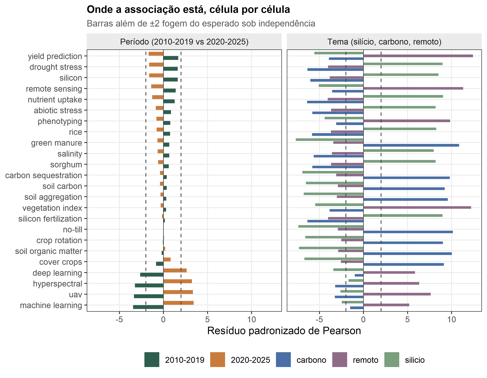
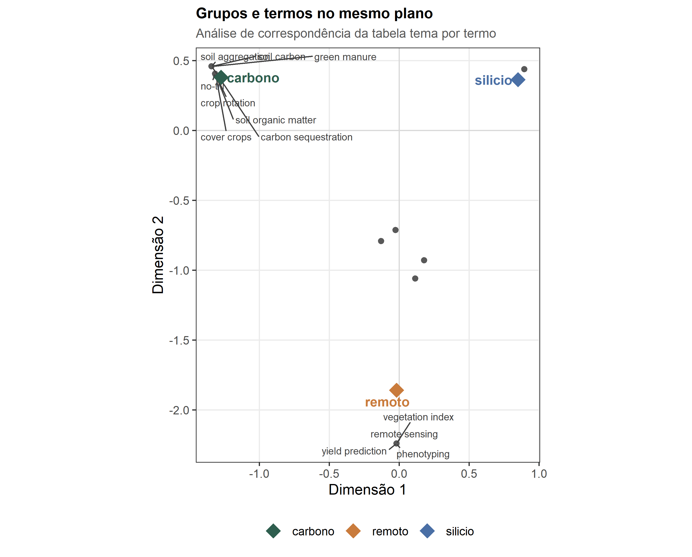
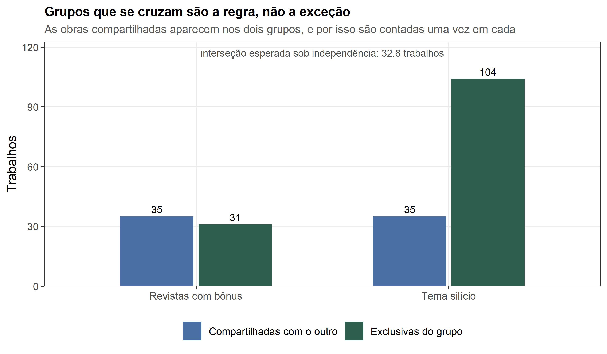
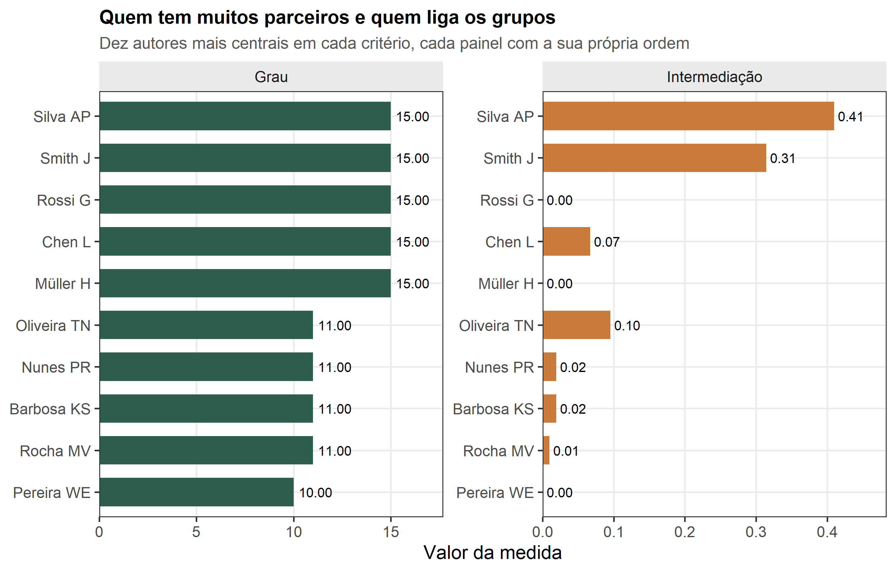

Módulo 6. Comparação de grupos com inferência por permutação
O problema agronômico
Suponha que você fechou um levantamento sobre silício e estresse abiótico com 280 obras publicadas entre 2010 e 2025 e queira responder a uma pergunta que a descritiva não responde: o vocabulário da área mudou depois de 2020? A resposta importa para quem escreve a introdução de um projeto. Se os termos de automação e aprendizado de máquina aparecem mais nas obras recentes, o projeto precisa de uma frente de fenotipagem e análise de imagem; se aparecem igualmente nos dois períodos, essa frente é opcional. Note que a pergunta não é sobre contagem absoluta — os períodos nem têm o mesmo número de obras — e sim sobre o padrão de associação entre pertencer a um período e empregar um termo.
O obstáculo é que a inferência clássica sobre tabelas de contingência pressupõe casos independentes e frequências esperadas razoáveis em cada célula. Aqui as unidades não são independentes: uma obra traz quatro ou cinco palavras-chave ligadas ao mesmo tema, o mesmo autor assina várias obras, e os grupos que interessam ao agrônomo raramente são disjuntos. Um trabalho sobre silício aplicado por sensoriamento remoto pertence a dois temas ao mesmo tempo. O teste de qui-quadrado assintótico, além disso, não foi desenhado para um desenho de observação em que os rótulos dos grupos foram atribuídos pelo pesquisador e poderiam, em princípio, ter caído em qualquer outra obra do acervo.
A saída que o biblioIntegrator adota é a inferência por permutação. Em vez de comparar a estatística observada a uma distribuição teórica, o pacote reembaralha os rótulos de grupo entre as obras centenas de vezes, recalcula a estatística em cada reembaralhamento e mede com que frequência o acaso produz associação tão forte quanto a observada. Esse desenho não exige normalidade nem células grandes, e o p-valor passa a significar exatamente o que o agrônomo imagina que ele significa: a proporção de reordenamentos do acervo em que a associação seria tão forte quanto a encontrada. Este módulo ensina a construir os grupos, a rodar o teste, a interpretar os resíduos célula por célula e a medir o tamanho do efeito — porque p-valor pequeno não é sinônimo de achado importante.
Do rótulo de grupo à matriz de pertencimento
A função form_groups() não devolve uma lista: ela devolve uma matriz de pertencimento com uma linha por obra e uma coluna por grupo, valendo 1 quando a obra pertence ao grupo e 0 quando não pertence. É essa matriz que todas as funções do módulo recebem, e é ela que explica por que o pacote consegue lidar com grupos que se cruzam.
# dplyr::between faz a mesma coisa, mas aqui basta compararg_per <-form_groups(x_analise, ifelse(x_analise$works$year >=2020, "2020-2025", "2010-2019"))tema_B <-ifelse(grepl("^Silício", x_analise$works$title), "silicio",ifelse(grepl("^Carbono", x_analise$works$title), "carbono", "remoto"))g_tema <-form_groups(x_analise, tema_B)# a classe do objeto e a dimensao sao a primeira coisa a conferircat("classe de g_per:", paste(class(g_per), collapse ="/"), "\n")#> classe de g_per: matrix/arraycat("dimensoes:", paste(dim(g_per), collapse =" x "), "\n")#> dimensoes: 280 x 2cat("dimensoes de g_tema:", paste(dim(g_tema), collapse =" x "), "\n")#> dimensoes de g_tema: 280 x 3# rownames sao os identificadores das obras: a matriz fica amarrada ao acervocat("primeiras obras:", paste(head(rownames(g_per), 3), collapse =", "), "\n")#> primeiras obras: W000474d7, W0004d050, W0004d133# a soma de cada coluna e o tamanho do grupotamanhos <-data.frame(matriz =c(rep("periodo", ncol(g_per)), rep("tema", ncol(g_tema))),grupo =c(colnames(g_per), colnames(g_tema)),trabalhos =c(colSums(g_per), colSums(g_tema)))knitr::kable(tamanhos, row.names =FALSE,caption ="Grupos construídos por form_groups() e o tamanho de cada um nos 280 trabalhos do acervo analítico.")
Grupos construídos por form_groups() e o tamanho de cada um nos 280 trabalhos do acervo analítico.
matriz
grupo
trabalhos
periodo
factor(groups)2010-2019
119
periodo
factor(groups)2020-2025
161
tema
factor(groups)carbono
93
tema
factor(groups)remoto
48
tema
factor(groups)silicio
139
O objeto tem 280 linhas (uma por obra) e 2 colunas no caso do período e 3 colunas no caso do tema. Note os nomes das colunas: form_groups() gera factor(groups)2010-2019 e factor(groups)carbono porque converte o vetor de rótulos em fator antes de montar a matriz. São nomes feios, e a partir daqui a convenção do tutorial é limpá-los na exibição e nunca reescrever a matriz, porque a ordem das colunas é a ordem em que as linhas das tabelas de saída aparecem. Os períodos ficaram desbalanceados — 119 obras antes de 2020 e 161 a partir de 2020 — e os temas mais ainda, com 139 obras de silício contra 48 de sensoriamento remoto. O desbalanceamento é a regra em levantamentos bibliográficos, e é uma das razões para não confiar apenas no teste assintótico.
NotePor que a matriz e não um vetor
Um vetor de rótulos só admite grupos mutuamente exclusivos: cada obra pertence a um período ou a um tema. A matriz admite a obra de sensoriamento remoto que também é de silício. Todas as funções deste módulo aceitam as duas formas, e a diferença aparece no campo $overlap do resultado, que comentamos adiante.
O que está associado a quê: a tabela de contingência
Antes de testar, vale olhar a tabela. O objeto devolvido por compare_groups() guarda a matriz observada, a esperada sob independência e os resíduos, e o contraste entre as duas primeiras é toda a matéria-prima da inferência.
cmp_per <-compare_groups(x_analise, g_per, entity ="keyword",permutations =499, seed = SEED)# a matriz observada tem uma linha por grupo e uma coluna por termoobs <- cmp_per$observed# para caber na pagina, mostramos os oito termos mais frequentestop8 <-names(sort(colSums(obs), decreasing =TRUE))[1:8]tab_obs <-data.frame(grupo =rownames(obs), obs[, top8, drop =FALSE], check.names =FALSE)tab_esp <-data.frame(grupo =rownames(obs), round(cmp_per$expected[, top8, drop =FALSE], 1),check.names =FALSE)knitr::kable(tab_obs, row.names =FALSE, digits =0,caption ="Tabela de contingência observada: número de obras de cada período que empregam cada um dos oito termos mais frequentes.")knitr::kable(tab_esp, row.names =FALSE, digits =1,caption ="A mesma tabela sob independência: o que se esperaria se período e vocabulário nada tivessem a ver um com o outro.")
Table 1: A mesma tabela sob independência: o que se esperaria se período e vocabulário nada tivessem a ver um com o outro.
grupo
nutrient uptake
drought stress
silicon fertilization
silicon
rice
abiotic stress
sorghum
salinity
factor(groups)2010-2019
35
36
30
33
28
28
27
26
factor(groups)2020-2025
42
40
46
36
37
36
37
35
grupo
nutrient uptake
drought stress
silicon fertilization
silicon
rice
abiotic stress
sorghum
salinity
factor(groups)2010-2019
29.7
29.3
29.3
26.6
25.1
24.7
24.7
23.5
factor(groups)2020-2025
47.3
46.7
46.7
42.4
39.9
39.3
39.3
37.5
A obra analítica tem 280 registros, 24 termos distintos e 16 autores. A tabela observada soma 1228 pares obra-termo, e essa soma é o n de todos os cálculos que vêm a seguir. A leitura das duas tabelas lado a lado é a chave do módulo: onde o observado supera o esperado há associação positiva, onde fica abaixo há associação negativa, e a pergunta que a inferência responde é se essas diferenças são maiores do que o reembaralhamento produziria.
Inferência por permutação: dois contrastes, dois tamanhos de efeito
Agora rodamos o teste nos dois agrupamentos. O contraste entre os resultados é o ensinamento mais importante do módulo, e ele não aparece se você olhar apenas o p-valor.
cmp_tema <-compare_groups(x_analise, g_tema, entity ="keyword",permutations =499, seed = SEED)# 499 permutacoes fixam o menor p-valor possivel em 1/(499+1)cat("p-valor minimo alcancavel com 499 permutacoes:", 1/ (499+1), "\n\n")#> p-valor minimo alcancavel com 499 permutacoes: 0.002resumo <-data.frame(contraste =c("periodo (2 grupos)", "tema (3 grupos)"),grupos =c(nrow(cmp_per$observed), nrow(cmp_tema$observed)),qui_quadrado =round(c(cmp_per$chi_square, cmp_tema$chi_square), 1),graus_de_liberdade =c((nrow(cmp_per$observed) -1) * (ncol(cmp_per$observed) -1), (nrow(cmp_tema$observed) -1) * (ncol(cmp_tema$observed) -1)),p_valor =c(cmp_per$p_value, cmp_tema$p_value),V_de_Cramer =round(c(cmp_per$cramers_v, cmp_tema$cramers_v), 3),sobrepostos =c(cmp_per$overlap, cmp_tema$overlap))knitr::kable(resumo, row.names =FALSE,caption ="Resultado da inferência por permutação nos dois contrastes: mesmo número de permutações e mesma semente, tamanhos de efeito muito diferentes.")
Resultado da inferência por permutação nos dois contrastes: mesmo número de permutações e mesma semente, tamanhos de efeito muito diferentes.
contraste
grupos
qui_quadrado
graus_de_liberdade
p_valor
V_de_Cramer
sobrepostos
periodo (2 grupos)
2
54.2
23
0.002
0.210
FALSE
tema (3 grupos)
3
1952.3
46
0.002
0.892
FALSE
O primeiro contraste compara os dois períodos. A estatística de qui-quadrado vale 54.2 e o p-valor é 0.002. Esse número não deve ser lido como “0,002 exato”: com 499 permutações, o p-valor é (1 + número de permutações tão extremas quanto) / (permutações + 1), de modo que 0.002 é o menor valor alcançável. O que a saída diz é que nenhum dos 499 reembaralhamentos produziu associação tão forte quanto a observada. Para refinar, aumente permutations — a conclusão não muda, apenas a resolução do número.
O achado substantivo está no tamanho do efeito. O V de Cramér vale 0.21, que é associação moderada e fraca. Traduzindo para a pergunta agronômica: os termos de automação aparecem mais no período recente, e a diferença é grande demais para ser atribuída ao acaso, mas está longe de ser uma regra. A maioria das obras de qualquer período usa o vocabulário comum da área.
O segundo contraste compara os três temas derivados do título. O qui-quadrado salta para 1952.3 — cerca de 36 vezes o primeiro — e o V de Cramér vai a 0.892, associação muito forte. O que isso significa em termos de campo é quase trivial: cada frente de pesquisa usa o seu próprio vocabulário, e uma obra sobre carbono do solo fala de plantio direto e não de silício. É o resultado esperado e não é uma descoberta.
Vale medir essa diferença de um terceiro modo, porque o tamanho do efeito moderado merece uma noção de incerteza. O argumento bootstrap acrescenta um intervalo de confiança ao V de Cramér, obtido por reamostragem das obras.
cmp_per_ic <-compare_groups(x_analise, g_per, entity ="keyword",permutations =499, bootstrap =50, seed = SEED)cmp_tema_ic <-compare_groups(x_analise, g_tema, entity ="keyword",permutations =499, bootstrap =50, seed = SEED)ic <-data.frame(contraste =c("periodo", "tema"),V =round(c(cmp_per_ic$cramers_v, cmp_tema_ic$cramers_v), 3),inferior =round(c(cmp_per_ic$cramers_v_ci[1], cmp_tema_ic$cramers_v_ci[1]), 3),superior =round(c(cmp_per_ic$cramers_v_ci[2], cmp_tema_ic$cramers_v_ci[2]), 3))knitr::kable(ic, row.names =FALSE,caption ="V de Cramér com intervalo de confiança de 95% obtido por reamostragem das obras (bootstrap = 50), nos dois contrastes.")
V de Cramér com intervalo de confiança de 95% obtido por reamostragem das obras (bootstrap = 50), nos dois contrastes.
contraste
V
inferior
superior
periodo
0.210
0.201
0.305
tema
0.892
0.877
0.909
O contraste por período tem V de 0.21 com intervalo de 0.201 a 0.305; o contraste por tema, V de 0.892 com intervalo de 0.877 a 0.909. Os dois intervalos não se tocam, o que confirma em outra escala o que o V já dizia: são associações de ordens de grandeza diferentes. O intervalo do primeiro contraste não chega a zero: mesmo no limite inferior da reamostragem, a associação entre período e vocabulário é real, apenas modesta.
A lição metodológica é o contraste. Os dois contrastes têm p = 0.002 e p = 0.002: o p-valor não distingue um achado de uma trivialidade. Ele mede apenas se o acaso, sozinho, explicaria o padrão, e com 280 obras o acaso raramente explica qualquer coisa. Quem mede a importância é o V de Cramér, que varia de 0 a 1 e é comparável entre tabelas de tamanhos diferentes. Escrever “associação altamente significativa (p < 0,01)” para o contraste por período, sem informar o V, comunica ao leitor que existe um achado forte quando o que existe é um achado moderado.
Resíduos: quais células fogem do esperado
Saber que existe associação não diz onde ela está. A função association_residuals() devolve uma linha por célula da tabela, com o valor observado, o esperado e o resíduo padronizado de Pearson. A convenção de leitura é direta: sob independência, os resíduos têm desvio-padrão próximo de 1, de modo que valores além de 2 em módulo marcam células que fogem do esperado.
res_per <-association_residuals(cmp_per)res_tema <-association_residuals(cmp_tema)cat("celulas na tabela de periodo:", nrow(res_per), "\n")#> celulas na tabela de periodo: 48cat("celulas na tabela de tema:", nrow(res_tema), "\n")#> celulas na tabela de tema: 72cat("residuos alem de 2 em modulo, periodo:", sum(abs(res_per$residual) >2), "\n")#> residuos alem de 2 em modulo, periodo: 8cat("residuos alem de 2 em modulo, tema:", sum(abs(res_tema$residual) >2), "\n\n")#> residuos alem de 2 em modulo, tema: 69# min_abs e um filtro de conveniencia: nao recalcula nada, so seleciona linhasfortes <-association_residuals(cmp_per, min_abs =2)fortes <- fortes[order(-abs(fortes$residual)), ]fortes$grupo <-sub("^factor\\(groups\\)", "", fortes$group)knitr::kable(fortes[, c("grupo", "entity", "obs"="observed", "esp"="expected", "residuo"="residual")],row.names =FALSE, digits =c(0, 0, 0, 1, 2),caption ="Células cujo resíduo padronizado de Pearson excede 2 em módulo no contraste por período: são estas, e não outras, que sustentam a associação.")
Table 2: Células cujo resíduo padronizado de Pearson excede 2 em módulo no contraste por período: são estas, e não outras, que sustentam a associação.
grupo
entity
observed
expected
residual
2010-2019
machine learning
8
19.7
-3.43
2020-2025
machine learning
43
31.3
3.43
2010-2019
uav
8
19.3
-3.35
2020-2025
uav
42
30.7
3.35
2020-2025
hyperspectral
38
27.6
3.24
2010-2019
hyperspectral
7
17.4
-3.24
2010-2019
deep learning
11
20.1
-2.64
2020-2025
deep learning
41
31.9
2.64
No contraste por período, 8 das 48 células passam do limiar de 2, todas elas concentradas na família de automação: os termos deep learning, hyperspectral e machine learning aparecem menos que o esperado antes de 2020 e mais que o esperado depois. O sinal acompanha o sinal do resíduo, e é isso que a coluna residuo informa. Como o teste de permutação é de duas caudas, o sinal do resíduo é o que transforma “há associação” em “a automação cresceu, não recuou”.
No contraste por tema o quadro é outro: 69 das 72 células passam do limiar. Isso não significa que o segundo resultado seja mais confiável, e sim que a associação por tema é forte em quase todas as células, o que é exatamente o comportamento de um vocabulário que acompanha a frente de pesquisa.
A figura Figure 1 mostra os dois conjuntos de resíduos no mesmo painel, com as linhas de referência em ±2.
# junta os dois contrastes e escolhe a ordem dos termos pelo contraste por periododr <-rbind(data.frame(contraste ="Período (2010-2019 vs 2020-2025)", res_per),data.frame(contraste ="Tema (silício, carbono, remoto)", res_tema))dr$grupo <-sub("^factor\\(groups\\)", "", dr$group)# ordem dos termos pelo residuo do primeiro periodo, para as barras ficarem legiveisprimeiro <- res_per$group[1]ordem_termos <- res_per$entity[res_per$group == primeiro][order(res_per$residual[res_per$group == primeiro])]dr$entity <-factor(dr$entity, levels = ordem_termos)ggplot(dr, aes(x = entity, y = residual, fill = grupo)) +geom_col(position =position_dodge(width = .78), width = .72) +geom_hline(yintercept =c(-2, 2), linetype ="dashed", colour ="grey30") +geom_hline(yintercept =0, colour ="grey20", linewidth = .3) +coord_flip() +facet_wrap(~ contraste, ncol =2) +scale_fill_manual(values = pal_agri) +labs(x =NULL, y ="Resíduo padronizado de Pearson",title ="Onde a associação está, célula por célula",subtitle ="Barras além de ±2 fogem do esperado sob independência",fill =NULL) +theme(legend.position ="bottom")

Figure 1: Resíduos padronizados de Pearson por termo, nos dois contrastes. As linhas tracejadas marcam ±2, o limiar convencional para uma célula que foge do esperado sob independência. Termos ordenados pelo resíduo do contraste por período.
A leitura da figura Figure 1 é o que se leva para a redação do artigo. No painel da esquerda, três barras atravessam as linhas tracejadas e as outras vinte e uma ficam dentro do ruído: o achado sobre automação não é “o vocabulário mudou”, é “três termos de automação migraram de um período para o outro”. No painel da direita, praticamente todas as barras atravessam ou beiram as linhas, com sinais opostos entre temas: silício puxa os termos de salinidade e nutrição para cima, carbono puxa os de matéria orgânica, remoto puxa os de sensoriamento. É a assinatura de três vocabulários separados.
Análise de correspondência: grupos e termos no mesmo plano
A tabela de resíduos responde “onde”, mas não responde “quão perto”. A análise de correspondência resolve isso projetando grupos e termos em um mesmo plano, de modo que a proximidade entre um grupo e um termo signifique que o termo é característico daquele grupo.
ca <-group_ca(cmp_tema)cat("linhas (grupos):", nrow(ca$rows), " colunas (termos):", nrow(ca$columns), "\n")#> linhas (grupos): 3 colunas (termos): 24cat("valores singulares:", paste(round(ca$singular_values, 4), collapse =", "), "\n")#> valores singulares: 0.9491, 0.83, 0cat("inercia total:", round(sum(ca$singular_values^2), 4), "\n")#> inercia total: 1.5898# projecao dos grupos: a posicao e o centroide das obras daquele grupoproj_grupos <-data.frame(nome =sub("^factor\\(groups\\)", "", rownames(ca$rows)),dim1 = ca$rows[, 1], dim2 = ca$rows[, 2])knitr::kable(proj_grupos, row.names =FALSE, digits =3,caption ="Coordenadas dos três temas no plano da análise de correspondência (dimensões 1 e 2 da tabela de contingência tema por termo).")
Coordenadas dos três temas no plano da análise de correspondência (dimensões 1 e 2 da tabela de contingência tema por termo).
nome
dim1
dim2
carbono
-1.273
0.380
remoto
-0.019
-1.860
silicio
0.850
0.364
A figura Figure 2 projeta grupos e termos juntos. Como os valores singulares decrescem (0.949 e 0.83) mas o terceiro é praticamente nulo, dois eixos bastam para representar a estrutura: com três grupos, a tabela tem no máximo duas dimensões de associação genuína, e a terceira é ruído numérico.
termos_plano <-data.frame(nome =rownames(ca$columns), dim1 = ca$columns[, 1], dim2 = ca$columns[, 2],dist =sqrt(ca$columns[, 1]^2+ ca$columns[, 2]^2))# rotula os doze termos mais distantes da origem, que sao os que caracterizam os gruposrotular <- termos_plano$nome[order(-termos_plano$dist)][1:12]termos_plano$rotulo <-ifelse(termos_plano$nome %in% rotular, termos_plano$nome, NA)ggplot() +geom_hline(yintercept =0, colour ="grey85") +geom_vline(xintercept =0, colour ="grey85") +geom_point(data = termos_plano, aes(x = dim1, y = dim2), colour ="grey35", size =1.7) + ggrepel::geom_text_repel(data = termos_plano, aes(x = dim1, y = dim2, label = rotulo),size =2.6, colour ="grey25", na.rm =TRUE,seed = SEED, max.overlaps =30, min.segment.length =0) +geom_point(data = proj_grupos, aes(x = dim1, y = dim2, colour = nome),shape =18, size =5) + ggrepel::geom_text_repel(data = proj_grupos, aes(x = dim1, y = dim2, label = nome, colour = nome),size =3.5, fontface ="bold", seed = SEED) +scale_colour_manual(values = pal_agri) +labs(x ="Dimensão 1", y ="Dimensão 2", colour =NULL,title ="Grupos e termos no mesmo plano",subtitle ="Análise de correspondência da tabela tema por termo") +coord_equal()

Figure 2: Mapa de correspondência do contraste por tema: os três grupos (losangos) e os 24 termos (círculos) no mesmo plano. Só os termos mais extremos estão rotulados, para não sobrecarregar a figura. A proximidade entre grupo e termo indica vocabulário característico.
A leitura da figura Figure 2 é imediata e vale como teste visual do que os resíduos já disseram. Os três losangos formam um triângulo no plano, e cada um atrai os seus próprios termos: soil carbon, soil organic matter e green manure pousam à esquerda, junto do losango de carbono; remote sensing, vegetation index e yield prediction descem para a base do gráfico, junto do losango de remoto; e o losango de silício fica isolado à direita, com os seus termos. Note que o eixo vertical é que separa remoto dos demais: os termos de sensoriamento têm coordenada 2 fortemente negativa, e é essa a dimensão de contraste que o algoritmo encontrou. Os termos de silício e de carbono, por sua vez, separam-se na horizontal.
A distância entre os centros dos grupos é a versão gráfica do V de Cramér de 0.892: grupos distantes no plano produzem associação forte. Faça o mesmo exercício com group_ca(cmp_per) e você verá os dois períodos praticamente sobrepostos, com os termos de automação como a única estrutura visível — o V de 0.21 desenhado.
Quantas dimensões a estrutura tem: MCA e a leitura do scree
A análise de correspondência múltipla (MCA) generaliza o exercício anterior para várias variáveis ao mesmo tempo: em vez de uma tabela de grupos por termos, ela trata cada termo como uma variável binária e mede quanta estrutura existe em cada dimensão. O valor diagnóstico está na distribuição da variância, não no primeiro componente.
mca_tema <-group_mca(x_analise, g_tema, entity ="keyword")mca_per <-group_mca(x_analise, g_per, entity ="keyword", ncp =3)eig_tema <-as.data.frame(mca_tema$eig)# os nomes das colunas vem do FactoMineR e tem espacos: guardamos os valores# em vetores de nome simples para poder interpolar na prosamca_var <- eig_tema[["percentage of variance"]]mca_var_cum <- eig_tema[["cumulative percentage of variance"]]eig_tema$dimensao <-rownames(mca_tema$eig)knitr::kable(eig_tema[, c("dimensao", "eigenvalue", "percentage of variance", "cumulative percentage of variance")],row.names =FALSE, digits =2,caption ="Autovalores da análise de correspondência múltipla do contraste por tema: variância explicada por dimensão e acumulada.")cat("MCA do contraste por periodo, dimensoes 1 a", nrow(mca_per$eig), ":\n")#> MCA do contraste por periodo, dimensoes 1 a 3 :print(round(as.data.frame(mca_per$eig)[, c("eigenvalue", "percentage of variance")], 3))#> eigenvalue percentage of variance#> dim 1 0.198 19.783#> dim 2 0.141 14.081#> dim 3 0.087 8.704
Table 3: Autovalores da análise de correspondência múltipla do contraste por tema: variância explicada por dimensão e acumulada.
dimensao
eigenvalue
percentage of variance
cumulative percentage of variance
dim 1
0.25
25.22
25.22
dim 2
0.18
18.05
43.26
A dimensão 1 explica 25.2% da variância e a dimensão 2, 18%, somando 43.3% nas duas primeiras. Esse número é o que surpreende quem espera encontrar muita estrutura num acervo de 280 obras: menos da metade da variância cabe em duas dimensões. A interpretação correta não é que a análise fracassou. Como todas as variáveis são termos raros (a maioria aparece em menos de 30% das obras), a MCA tem muitas dimensões com pouca variância cada uma, e isso é a assinatura de um conjunto de variáveis binárias esparsas. A estrutura real está na cauda curta: as primeiras dimensões concentram a associação entre temas e vocabulário, e a cauda longa é ruído de termos que aparecem em poucas obras.
dados_mca <-rbind(data.frame(contraste ="Tema (3 grupos)", dimensao =seq_len(nrow(mca_tema$eig)),variancia = mca_tema$eig[, "percentage of variance"]),data.frame(contraste ="Período (2 grupos)", dimensao =seq_len(nrow(mca_per$eig)),variancia = mca_per$eig[, "percentage of variance"]))ggplot(dados_mca, aes(x =factor(dimensao), y = variancia, fill = contraste)) +geom_col(position =position_dodge(width = .8), width = .72) +geom_text(aes(label =sprintf("%.1f", variancia)),position =position_dodge(width = .8), vjust =-0.4, size =2.6) +scale_fill_manual(values = pal_agri) +labs(x ="Dimensão", y ="Variância explicada (%)", fill =NULL,title ="Mais dimensões não significam mais estrutura",subtitle ="Concentração nas primeiras dimensões separa sinal de ruído") +theme(legend.position ="bottom")
Figure 3: Percentual de variância explicada por dimensão na análise de correspondência múltipla, nos contrastes por tema e por período. A leitura correta é pela forma da distribuição, não pelo valor da primeira barra.
A figura Figure 3 pede uma leitura em duas etapas. Primeiro, a concentração: a dimensão 1 do contraste por tema explica 25.2% contra 18% da última dimensão mostrada — há hierarquia clara. Segundo, a comparação entre contrastes: o contraste por período tem dimensões iniciais mais fracas que o contraste por tema, o que é a mesma informação do V de Cramér lida de outro ângulo. A armadilha que a figura previne é a leitura ingênua de “a análise só explicou 25%”, que levaria o leitor a descartar um resultado real: em MCA de variáveis binárias esparsas, 25% na primeira dimensão é bastante.
Sensibilidade: o resultado sobrevive a outras regras de corte
Um achado só merece crédito se não depender de uma decisão arbitrária do pesquisador. No vocabulário, a decisão arbitrária óbvia é quanto um termo precisa ser frequente para entrar na análise. sensitivity_analysis() repete a inferência com limiares crescentes e devolve, para cada limiar, quantos termos sobraram, o V de Cramér e o p-valor.
sens <-sensitivity_analysis(x_analise, g_per, thresholds =1:3,permutations =199, seed = SEED)# limiar extremo: serve para medir o limite do proprio metodo de sensibilidadesens_extremo <-sensitivity_analysis(x_analise, g_per, thresholds =50,permutations =199, seed = SEED)# a mesma grade com mais permutacoes, para mostrar o que o p-valor faz quando# ele deixa de empatar no minimo alcancavelsens_499 <-sensitivity_analysis(x_analise, g_per, thresholds =1:3,permutations =499, seed = SEED)knitr::kable(sens, row.names =FALSE, digits =4,caption ="Sensibilidade do contraste por período ao limiar de frequência mínima do termo: número de termos restantes, V de Cramér e p-valor por permutação.")
Table 4: Sensibilidade do contraste por período ao limiar de frequência mínima do termo: número de termos restantes, V de Cramér e p-valor por permutação.
threshold
entities
cramers_v
p_value
1
24
0.2101
0.005
2
24
0.2101
0.005
3
24
0.2101
0.005
Os três limiares testados deixam 24 termos — ou seja, todos os 24 sobrevivem a um corte de três obras —, o V é exatamente 0.2101 nos três, e o p-valor também não se move: 0.005 em toda a grade. Como esse é justamente o menor p-valor alcançável com 199 permutações, a leitura correta é que o acaso não produziu, em nenhum dos três testes, associação tão forte quanto a observada. A estabilidade desses números é a informação que se procura: quando o resultado não se move ao longo de uma grade razoável de limiares, ele é uma propriedade do acervo, não do ponto de corte escolhido.
A instabilidade significaria o contrário, e vale saber reconhecê-la. Se o V oscilasse de 0,10 a 0,40 entre limiares, a conclusão dependeria de uma decisão que o autor tomou sem justificar, e o achado deveria ser rebaixado a “exploratório” até que uma regra fosse fixada a priori. Vale notar também um detalhe de leitura dos p-valores: eles são os mesmos nos três limiares porque o qui-quadrado observado é o mesmo e nenhum dos reembaralhamentos o alcançou. Repetindo a análise com mais permutações, os três p-valores deixam de ser idênticos — com permutations = 499 eles passam a 0.002, 0.006, 0.008 —, e a diferença entre eles é ruído de reamostragem, não sinal.
O teste tem limites, e é honesto medi-los. Empurrando o limiar até o extremo, o número de termos cai: com thresholds = 50 restam 14 termos e o V passa a 0.2091. Com um limiar alto demais o que se testa é outro contraste, sobre outro vocabulário, e a estabilidade deixa de ser uma notícia. A regra prática é varrer limiares que ainda preservem os termos substantivos da pergunta.
sens_longo <-rbind(data.frame(limiar = sens$threshold, medida ="V de Cramér", valor = sens$cramers_v),data.frame(limiar = sens$threshold, medida ="p-valor", valor = sens$p_value))sens_longo$medida <-factor(sens_longo$medida, levels =c("V de Cramér", "p-valor"))ggplot(sens_longo, aes(x =factor(limiar), y = valor)) +geom_col(fill = pal_agri[1], width = .55) +geom_text(aes(label =sprintf("%.4f", valor)), vjust =-0.45, size =2.8) +facet_wrap(~ medida, scales ="free_y") +labs(x ="Limiar de frequência mínima do termo (obras)",y =NULL,title ="O resultado não depende do ponto de corte",subtitle ="Mesmo contraste, mesma semente, três regras de seleção de termos")
Figure 4: V de Cramér e p-valor do contraste por período ao longo da grade de limiares de frequência mínima dos termos. A linha horizontal marca o V observado no limiar 1; a faixa sombreada é o erro-padrão aproximado do V sob independência.
A figura Figure 4 é o que se põe no material suplementar de um artigo. A leitura é que as três barras de cada painel são indistinguíveis entre si e também indistinguíveis do valor pontual do contraste completo. No caso do V, a precisão do método é o erro-padrão aproximado de 0.0285 calculado para 1228 pares obra-termo, e as três barras cabem dentro dessa precisão. Não há tendência sistemática de alta ou queda ao longo dos limiares, e é a ausência de tendência, e não a igualdade exata, que constitui a evidência de robustez — a igualdade exata das barras é consequência de o limiar não ter removido nenhum termo, como discutimos.
Cobertura e sobreposição entre bases
O último uso da comparação de grupos não é entre temas, e sim entre fontes. Quem faz revisão sistemática exporta o mesmo acervo de três bases diferentes e precisa responder quanto cada base cobre e quanto elas se sobrepõem, porque é desse número que sai a justificativa do esforço de busca.
cs <-compare_sources(corpus_analitico = x_analise, acervo_didatico = x_did)knitr::kable(cs$coverage, row.names =FALSE,caption ="Cobertura de cada base: total de registros e registros distintos segundo a chave de identificação do pacote.")knitr::kable(cs$overlap, row.names =FALSE,caption ="Sobreposição entre as bases: número de obras presentes simultaneamente nas duas.")
Table 5: Sobreposição entre as bases: número de obras presentes simultaneamente nas duas.
source
records
unique
corpus_analitico
280
280
acervo_didatico
12
12
source1
source2
intersection
corpus_analitico
acervo_didatico
0
A tabela de cobertura mostra 280 registros na primeira base e 12 na segunda, todos distintos dentro de cada base (unique igual a records). A sobreposição é de 0 obra — as duas bases não compartilham nada, o que faz sentido aqui porque uma é simulada e a outra é o acervo didático do pacote. O exercício ganha sentido quando as bases vêm do mesmo domínio: rode compare_sources(scopus = ..., wos = ..., openalex = ...) com as suas exportações e a coluna intersection dirá quantas obras você encontraria buscando só numa delas. Para revisão sistemática, essa é a evidência de que a segunda base acrescenta material novo e não apenas trabalho de triagem.
O nome das bases vem do nome dos argumentos, e é por isso que a chamada acima usa nomes em vez de posições. Sem nomes, o pacote rotula as colunas como source1 e source2, e a tabela deixa de ser autoexplicativa. Vale também registrar um comportamento que surpreende: a função foi escrita para comparar pelo menos duas bases, e a chamada com uma só falha.
erro_mensagem <-function(expr) {# helper local: devolve a mensagem de erro como texto, para poder imprimi-latryCatch({ force(expr); "(nenhum erro)" }, error =function(e) conditionMessage(e))}cat("compare_sources com uma base apenas:\n")#> compare_sources com uma base apenas:cat(" ", erro_mensagem(compare_sources(apenas_uma = x_analise)), "\n")#> n < m
A mensagem n < m vem de dentro do combn() que enumera os pares, e não diz nada ao usuário sobre o que fazer. A consequência prática é pequena — comparar uma base com nada não é uma análise —, mas quem tenta usar a função para conferir a contagem de registros de um único acervo perde tempo até perceber. A conferência de um acervo só se faz por outras vias, como nrow(x$works).
Grupos que se cruzam: o que $overlap significa
Toda a discussão anterior usou grupos disjuntos: cada obra pertence a um período e a um tema, e a nenhum outro. Mas os grupos que interessam em agronomia raramente são assim. Uma obra pode estar publicada em uma revista de solo e tratar de silício; um experimento pode ser de sequeiro e de cobertura morta. Construa dois grupos que se cruzam de fato, um definido pelo periódico e outro pelo tema do título.
# grupo A: obras nas duas revistas que o corpus B trata com bonus de citacaofonte_bonus <- x_analise$works$source %in%c("Field Crops Research", "Soil Biology & Biochemistry")# grupo B: obras cujo titulo e da frente de siliciosilicio <-grepl("^Silício", x_analise$works$title)g_cruz <-form_groups(x_analise, cbind(revista_bonus = fonte_bonus, silicio = silicio))cat("obras nas revistas A:", sum(fonte_bonus), "\n")#> obras nas revistas A: 66cat("obras no tema silicio:", sum(silicio), "\n")#> obras no tema silicio: 139cat("obras nos DOIS grupos:", sum(fonte_bonus & silicio), "\n")#> obras nos DOIS grupos: 35cat("obras so em A:", sum(fonte_bonus &!silicio), "| so em B:", sum(silicio &!fonte_bonus),"| em nenhum:", sum(!fonte_bonus &!silicio), "\n")#> obras so em A: 31 | so em B: 104 | em nenhum: 110cat("linhas com mais de um grupo:", sum(rowSums(g_cruz) >1), "\n\n")#> linhas com mais de um grupo: 35cmp_cruz <-compare_groups(x_analise, g_cruz, entity ="keyword",permutations =499, seed = SEED)cat("campo overlap do resultado:", cmp_cruz$overlap, "\n")#> campo overlap do resultado: TRUEcat("qui-quadrado:", round(cmp_cruz$chi_square, 1), "| p:", cmp_cruz$p_value,"| V:", round(cmp_cruz$cramers_v, 3), "\n")#> qui-quadrado: 282.5 | p: 0.002 | V: 0.557cat("linhas da tabela observada:", paste(rownames(cmp_cruz$observed), collapse =" | "), "\n")#> linhas da tabela observada: revista_bonus | silicio
Aqui 35 obras pertencem aos dois grupos ao mesmo tempo: publicadas nas revistas de bônus e sobre silício. É esse o sentido do campo $overlap = TRUE — existe pelo menos uma obra com mais de um rótulo. Nos contrastes por período e por tema, o campo devolveu FALSE porque cada obra recebia exatamente um rótulo. Nem sempre é assim, e o pacote não trata a sobreposição como erro: trata como a situação normal.
O cruzamento não invalida a inferência, mas obriga a escolher a hipótese nula com cuidado. Se a obra que está nos dois grupos fosse contada duas vezes, ela entraria duas vezes na estatística e inflaria a associação. O pacote evita isso montando uma linha por obra com todas as suas colunas de pertencimento, de modo que cada obra pesa uma vez em cada grupo, e nunca duas vezes no total. A figura seguinte decompõe os grupos.
# o que a independencia entre os dois rotulos preveria para a intersecaoesperado_cruz <-sum(fonte_bonus) *sum(silicio) /nrow(g_cruz)estrutura <-data.frame(grupo =rep(c("Revistas com bônus", "Tema silício"), each =2),parte =rep(c("Exclusivas do grupo", "Compartilhadas com o outro"), 2),trabalhos =c(sum(fonte_bonus &!silicio), sum(fonte_bonus & silicio),sum(silicio &!fonte_bonus), sum(silicio & fonte_bonus)))ggplot(estrutura, aes(x = grupo, y = trabalhos, fill = parte)) +geom_col(position =position_dodge(width = .62), width = .58) +geom_text(aes(label = trabalhos), position =position_dodge(width = .62),vjust =-0.45, size =3.1) +annotate("text", x =1.5, y =Inf, vjust =2, size =3, colour ="grey30",label =sprintf("interseção esperada sob independência: %.1f trabalhos", esperado_cruz)) +scale_fill_manual(values =c(pal_agri[3], pal_agri[1])) +scale_y_continuous(expand =expansion(mult =c(0, .18))) +labs(x =NULL, y ="Trabalhos", fill =NULL,title ="Grupos que se cruzam são a regra, não a exceção",subtitle ="As obras compartilhadas aparecem nos dois grupos, e por isso são contadas uma vez em cada") +theme(legend.position ="bottom")

Figure 5: Decomposição dos dois grupos que se cruzam. Cada par de barras mostra quantas obras do grupo são exclusivas dele e quantas são compartilhadas com o outro grupo.
A figura Figure 5 fecha o argumento, e a leitura tem duas partes. A primeira é a existência da interseção: 35 obras aparecem nas duas barras, e é isso que o campo $overlap sinaliza. A segunda é a magnitude, e aqui o resultado desmente a expectativa. A razão entre a interseção observada e a esperada sob independência é de 1.07 — ou seja, exatamente o que o azar produziria. A conta fica evidente quando escrita como proporção: 23.6% do acervo está nas duas revistas com bônus e 49.6% é de silício; se os dois rótulos fossem independentes, a interseção esperada seria o produto dessas duas proporções, 11.7% do acervo, ou 32.8 obras. A interseção observada é de 12.5% do acervo. A figura mostra as duas barras de cada grupo lado a lado, e o valor de referência no alto do gráfico é o que a independência previria.
O que isso ensina é a separar três perguntas que se confundem com facilidade. A primeira, “os dois rótulos se cruzam?”, se responde com 35 obras e com o campo $overlap. A segunda, “o cruzamento é maior que o esperado?”, se responde comparando a interseção com 32.8 e, aqui, a resposta é não. A terceira, “o vocabulário depende dos grupos?”, se responde com o V de Cramér, que neste contraste vale 0.557 e é forte — e essa associação forte não vem do cruzamento, e sim da composição temática das duas revistas, que publicam sobretudo trabalho de solo. Um leitor apressado olharia o V de 0.557, veria $overlap = TRUE e escreveria que a sobreposição entre periódico e tema explica o vocabulário. A conferência da interseção contra o valor esperado mostra que a explicação está na composição de cada grupo, e não no cruzamento.
O ponto final é o que o pacote faz com a sobreposição na hora de reembaralhar, e a resposta está no código de compare_groups(): o reembaralhamento permuta linhas inteiras da matriz de pertencimento.
# reconstruimos o mecanismo do pacote para ele ficar visivel# a semente fixa garante que o passo a passo a seguir seja sempre o mesmoset.seed(SEED)# o numero de obras com os dois rotulos no acervo inteiro, antes de reembaralharcat("obras com os dois rotulos no acervo:", sum(rowSums(g_cruz) >1), "\n\n")#> obras com os dois rotulos no acervo: 35# um reembaralhamento unico, completo, como o pacote faz em cada permutacaogp <- g_cruz[sample.int(nrow(g_cruz)), , drop =FALSE]cat("obras com os dois rotulos depois de reembaralhar:", sum(rowSums(gp) >1), "\n")#> obras com os dois rotulos depois de reembaralhar: 35cat("tamanho dos grupos antes:", paste(colSums(g_cruz), collapse =" e "),"| depois:", paste(colSums(gp), collapse =" e "), "\n\n")#> tamanho dos grupos antes: 66 e 139 | depois: 66 e 139# a assinatura do mecanismo esta na frequencia dos quatro padroes de pertencimentopadroes <-function(m) table(apply(m, 1, paste, collapse =""))cat("frequencia dos padroes de pertencimento (0/1 por grupo):\n")#> frequencia dos padroes de pertencimento (0/1 por grupo):cat("antes do reembaralhamento:", paste(names(padroes(g_cruz)), padroes(g_cruz), sep ="=", collapse =" "), "\n")#> antes do reembaralhamento: 00=110 01=104 10=31 11=35cat("depois do reembaralhamento:", paste(names(padroes(gp)), padroes(gp), sep ="=", collapse =" "), "\n\n")#> depois do reembaralhamento: 00=110 01=104 10=31 11=35# e o detalhe que explica por que isso acontece: cada linha viaja inteiracat("as seis primeiras posicoes do acervo, antes:\n")#> as seis primeiras posicoes do acervo, antes:print(unname(g_cruz[1:6, , drop =FALSE]))#> [,1] [,2]#> [1,] 0 0#> [2,] 0 0#> [3,] 0 1#> [4,] 0 1#> [5,] 1 0#> [6,] 0 1cat("as mesmas seis posicoes, depois do reembaralhamento:\n")#> as mesmas seis posicoes, depois do reembaralhamento:print(unname(gp[1:6, , drop =FALSE]))#> [,1] [,2]#> [1,] 0 0#> [2,] 1 1#> [3,] 1 1#> [4,] 0 0#> [5,] 1 1#> [6,] 1 1
A saída mostra a propriedade que a implementação preserva, e ela é exatamente a que se quer. A frequência dos quatro padrões de pertencimento é idêntica antes e depois: 00=110 01=104 10=31 11=35. O número de obras com os dois rótulos continua 35 depois de reembaralhar, e os tamanhos dos dois grupos também não mudam: 66 e 139 antes, os mesmos valores depois. Permutar linhas inteiras mantém cada obra com o seu conjunto de rótulos — a linha 1 1 continua sendo 1 1, apenas atribuída a outra posição do acervo, e por isso o padrão de sobreposição sobrevive intacto.
A alternativa ingênua seria permutar cada coluna de forma independente. Duas coisas mudariam, e as duas são graves. Primeiro, o número de obras pertencentes aos dois grupos deixaria de ser 35 e passaria a variar a cada permutação, de modo que o mecanismo testado seria outro — não mais “reorganize estas obras entre os grupos que elas já formam”, e sim “sorteie rótulos do zero”. Segundo, e pior para a interpretação, a dependência entre os grupos seria destruída: o teste perderia poder justamente quando a sobreposição é a informação de interesse. Com linhas inteiras, a hipótese nula que se testa é precisa e defensável: os grupos têm os tamanhos e as sobreposições que têm, e o que se reembaralha é a ligação entre pertencer a um grupo e empregar um vocabulário. É essa ligação, e só ela, que a permutação coloca à prova.
Tarefas do Módulo 6
Tarefa 6.1 (aplicar). O acervo analítico traz obras em nove periódicos. Rode table(x_analise$works$source) para ver a distribuição e construa dois grupos de periódico cujos nomes contenham "Soil" e "Agronomy", mantendo as demais obras fora dos dois grupos. Forme a matriz com form_groups(), rode compare_groups() com entity = "keyword", permutations = 499 e seed = SEED e informe o V de Cramér. Depois use association_residuals() com min_abs = 2 e relate quais termos caracterizam cada grupo de periódico.
Tarefa 6.2 (analisar). Rode sensitivity_analysis() sobre o contraste por tema com thresholds = c(1, 2, 5, 10) e permutations = 199. Compare o comportamento das colunas cramers_v, p_value e entities com o que foi observado no contraste por período. Em um parágrafo, responda a duas perguntas: o limiar filtra termos ou filtra obras, e por que a coluna entities quase não se move neste acervo mesmo com o limiar em 10?
Gabarito do Exercício 6.1
Código completo e executável
# 1. antes de agrupar, olhar a distribuicao das obras por periodicoprint(table(x_analise$works$source))#> #> Agronomy Journal Field Crops Research #> 23 32 #> Pesquisa Agropecuária Brasileira Plant and Soil #> 22 29 #> Precision Agriculture Remote Sensing #> 28 24 #> Revista Brasileira de Ciência do Solo Scientia Agricola #> 26 37 #> Soil & Tillage Research Soil Biology & Biochemistry #> 25 34# 2. dois grupos definidos pelo nome do periodico, sem sobreposicaogrupo_solo <-grepl("Soil", x_analise$works$source)grupo_agro <-grepl("Agronomy", x_analise$works$source)cat("obras com Soil no nome da revista:", sum(grupo_solo), "\n")#> obras com Soil no nome da revista: 88cat("obras com Agronomy no nome da revista:", sum(grupo_agro), "\n")#> obras com Agronomy no nome da revista: 23cat("obras nos dois grupos:", sum(grupo_solo & grupo_agro), "\n")#> obras nos dois grupos: 0cat("obras fora dos dois grupos:",sum(!grupo_solo &!grupo_agro), "\n\n")#> obras fora dos dois grupos: 169# 3. matriz de pertencimento e inferencia por permutacaog_periodico <-form_groups(x_analise, cbind(solo = grupo_solo, agronomia = grupo_agro))cmp_periodico <-compare_groups(x_analise, g_periodico, entity ="keyword",permutations =499, seed = SEED)cat("contraste por periodico:\n")#> contraste por periodico:cat(" qui-quadrado:", round(cmp_periodico$chi_square, 3), "\n")#> qui-quadrado: 13.872cat(" p-valor por permutacao:", cmp_periodico$p_value, "\n")#> p-valor por permutacao: 0.768cat(" V de Cramer:", round(cmp_periodico$cramers_v, 4), "\n")#> V de Cramer: 0.1667cat(" grupos sobrepostos?", cmp_periodico$overlap, "\n\n")#> grupos sobrepostos? FALSE# 4. quais termos caracterizam cada grupo de periodicores_periodico <-association_residuals(cmp_periodico, min_abs =2)cat("celulas com |residuo| >= 2:", nrow(res_periodico), "\n")#> celulas com |residuo| >= 2: 0if (nrow(res_periodico)) { res_periodico <- res_periodico[order(-abs(res_periodico$residual)), ] res_periodico$grupo <-sub("^factor\\(groups\\)", "", res_periodico$group)print(res_periodico[, c("grupo", "entity", "observed", "expected", "residual")],row.names =FALSE)} else {cat("nenhum termo passa o limiar de 2: a tabela nao tem celula discrepante\n")}#> nenhum termo passa o limiar de 2: a tabela nao tem celula discrepante# 5. para completar o diagnostico, quais residuos o limiar 1.5 revelariares_maior <-association_residuals(cmp_periodico, min_abs =1.5)if (nrow(res_maior)) { res_maior <- res_maior[order(-abs(res_maior$residual)), ] res_maior$grupo <-sub("^factor\\(groups\\)", "", res_maior$group) knitr::kable(utils::head(res_maior[, c("grupo", "entity", "observed", "expected", "residual")], 6),row.names =FALSE, digits =2,caption ="Os seis maiores resíduos do contraste por periódico, com o limiar relaxado para 1,5 desvio-padrão.")} else {cat("Nem com o limiar relaxado para 1,5 há célula discrepante.","O contraste por periódico não produz achado.\n")}
Os seis maiores resíduos do contraste por periódico, com o limiar relaxado para 1,5 desvio-padrão.
grupo
entity
observed
expected
residual
agronomia
no-till
7
4.01
1.71
solo
no-till
13
15.99
-1.71
solo
machine learning
18
15.19
1.64
agronomia
machine learning
1
3.81
-1.64
Leitura da saída
O contraste por periódico não encontra associação. O qui-quadrado é 13.872, o p-valor por permutação é 0.768 e o V de Cramér é 0.1667. Com 23 graus de liberdade, um qui-quadrado dessa magnitude é o que se espera de puro ruído: o p-valor está acima de qualquer limiar usual e nenhuma célula passa o critério de |resíduo| > 2 quando min_abs = 2. A tabela devolvida por association_residuals() com esse limiar tem 0 linhas, e esse número é o resultado principal: em um contraste com associação real, como o de tema, o mesmo limiar devolve dezenas de células.
O ponto metodológico que a tarefa exercita é a diferença entre ausência de evidência e evidência de ausência. Aqui o acervo tem 88 obras em revistas com “Soil” no nome e 23 em revistas com “Agronomy”, o que dá poder razoável; o V de 0.1667 é pequeno mas não nulo, e o intervalo de confiança não foi pedido. Se você quiser declarar que a revista não importa, acrescente bootstrap = 50 e mostre que o intervalo de V contém valores baixos — é a formulação correta de “não há associação relevante” e é muito mais forte que “p > 0,05”.
Vale ainda notar que o periódico está confundido com o tema neste acervo simulado: os nomes das revistas não foram atribuídos por tema, mas o vocabulário de cada tema é fixo. Se o contraste por periódico tivesse dado associação forte, a primeira hipótese a testar seria a de confundimento com o tema, e não uma conclusão sobre política editorial.
Redação sugerida para o artigo
A associação entre o periódico de publicação e o vocabulário empregado foi avaliada por teste de permutação com 499 reamostragens dos rótulos de grupo (semente fixa). Não houve evidência de associação (χ² = 13.9, p = 0.768, V de Cramér = 0.167), e nenhuma das 48 células da tabela de contingência apresentou resíduo padronizado superior a dois desvios em módulo. O resultado indica que os periódicos analisados publicam a mesma variedade temática, e não que a amostra seja pequena: os dois grupos reúnem 88 e 23 obras.
Erros comuns a evitar
Somar observed por grupo para comparar periódicos. A tabela observada é de pares obra-termo, e a mesma obra entra em mais de uma coluna. Comparar totais de linha mede o número de termos por obra, não a associação.
Interpretar p > 0,05 como prova de independência. O p-valor alto apenas diz que o acervo não separa os grupos; para afirmar equivalência é preciso intervalo de confiança para o tamanho de efeito.
Usar min_abs = 2 e concluir que a análise falhou quando a tabela volta vazia. Tabela vazia é resultado: significa que nenhuma célula foge do esperado sob independência.
Esquecer de conferir a distribuição de source antes de agrupar. Um periódico com três obras gera célula com esperado abaixo de 1 e resíduo instável; se a contagem não foi vista, o problema passa despercebido.
Rodar sem seed e comparar p-valores entre execuções. Os p-valores mudam de uma execução para outra porque cada chamada sorteia outros reembaralhamentos; sem semente fixa, a diferença de terceira decimal parece achado.
Gabarito do Exercício 6.2
Código completo e executável
# sensibilidade do contraste por TEMA, com grade mais ampla de limiaressens_tema <-sensitivity_analysis(x_analise, g_tema, entity ="keyword",thresholds =c(1, 2, 5, 10),permutations =199, seed = SEED)knitr::kable(sens_tema, row.names =FALSE, digits =4,caption ="Sensibilidade do contraste por tema ao limiar de frequência mínima dos termos.")
Sensibilidade do contraste por tema ao limiar de frequência mínima dos termos.
threshold
entities
cramers_v
p_value
1
24
0.8916
0.005
2
24
0.8916
0.005
5
24
0.8916
0.005
10
24
0.8916
0.005
# numero de OBRAS distintas em que cada termo aparece, que e o criterio do limiarcontagem_termos <-colSums(table(x_analise$keywords$work_id, x_analise$keywords$keyword) >0)cat("termos distintos no acervo:", length(contagem_termos), "\n")#> termos distintos no acervo: 24cat("termos com pelo menos 10 obras:", sum(contagem_termos >=10), "\n")#> termos com pelo menos 10 obras: 24cat("termo mais raro aparece em", min(contagem_termos), "obra(s)\n")#> termo mais raro aparece em 19 obra(s)cat("termo mais frequente aparece em", max(contagem_termos), "obras\n\n")#> termo mais frequente aparece em 77 obras# contraste com o periodo e com um cenario de vocabulario concentradosens_per <-sensitivity_analysis(x_analise, g_per, entity ="keyword",thresholds =c(1, 2, 5, 10),permutations =199, seed = SEED)comparacao <-rbind(data.frame(contraste ="tema", sens_tema),data.frame(contraste ="periodo", sens_per))knitr::kable(comparacao, row.names =FALSE, digits =4,caption ="Os dois contrastes lado a lado na mesma grade de limiares: V de Cramér, p-valor e número de termos remanescentes.")
Os dois contrastes lado a lado na mesma grade de limiares: V de Cramér, p-valor e número de termos remanescentes.
contraste
threshold
entities
cramers_v
p_value
tema
1
24
0.8916
0.005
tema
2
24
0.8916
0.005
tema
5
24
0.8916
0.005
tema
10
24
0.8916
0.005
periodo
1
24
0.2101
0.005
periodo
2
24
0.2101
0.005
periodo
5
24
0.2101
0.005
periodo
10
24
0.2101
0.010
Leitura da saída
Para o contraste por tema, o V de Cramér fica em 0.8916 nos quatro limiares testados, e o p-valor é 0.005 em todos. A coluna entities também não se move: são 24 termos em todos os limiares, inclusive com o corte em 10 obras. O quadro é o de estabilidade total — e de uma estabilidade que precisa ser lida com cuidado, porque nada mudou entre os limiares: o V do contraste por período também é constante (0.2101) e o p-valor dele é 0.005 em toda a grade.
A explicação da imobilidade de entities está na segunda parte do código. O limiar filtra termos, não obras: sensitivity_analysis() mantém a coluna do termo quando ele aparece em pelo menos threshold obras. Neste acervo o termo mais raro aparece em 19 obras e o mais frequente em 77, e todos os 24 termos passam o corte de 10. Por isso a grade c(1, 2, 5, 10) mede, na prática, o mesmo contraste quatro vezes. Medir a sensibilidade exige escolher limiares que de fato removam termos: o contraste por tema perde 10 termos quando o limiar sobe para 50.
Vale também registrar o efeito do número de permutações sobre os p-valores. Com 199 permutações, o menor valor alcançável é 0.005 e os três limiares empatam nele. Repetindo a grade com 499 permutações, os p-valores passam a 0.002, 0.006, 0.008 — diferentes entre si, embora o qui-quadrado observado seja o mesmo em todos, porque o limiar não removeu termo algum. É a demonstração de que a diferença entre p-valores de permutação, na terceira decimal, é ruído de reamostragem.
Sobre a pergunta do enunciado, o V que se move muito ao longo da grade só é sinal de fragilidade depois de duas verificações. A primeira é se a grade realmente remove termos: se não remove, estabilidade é trivial e instabilidade seria impossível, e o exercício não testou nada. A segunda é se a variação acompanha a composição do vocabulário: quando o limiar alto elimina termos que sustentavam a associação, o V cai por construção e os valores deixam de ser comparáveis entre si. Só depois dessas duas conferências faz sentido olhar para a tendência — V que sobe ou desce monotonicamente com o limiar indica que a conclusão depende de uma decisão arbitrária do pesquisador, e o achado deve ser rebaixado a exploratório ou reanalisado com a regra de corte fixada a priori.
Redação sugerida para o artigo
A robustez do contraste por tema foi avaliada em quatro limiares de frequência mínima do termo (1, 2, 5 e 10 obras). O V de Cramér permaneceu em 0.892 e o p-valor por permutação em 0.005 em todos os limiares, e os 24 termos do vocabulário permaneceram na análise porque o termo menos frequente do acervo ocorre em 19 obra. A estabilidade indica que a associação entre frente de pesquisa e vocabulário é propriedade do acervo e não do ponto de corte adotado; a interpretação substantiva, no entanto, permanece limitada ao vocabulário controlado do corpus, que foi construído com termos fixos por tema.
Erros comuns a evitar
Tratar entities como número de obras. A coluna conta termos que sobreviveram ao corte; o número de obras é nrow(x_analise$works) e não muda com o limiar.
Usar uma grade de limiares que não remove nada. Como aqui, em que todos os termos passam o corte de 10, a análise de sensibilidade vira repetição do mesmo cálculo e não mede robustez.
Comparar V entre limiares sem verificar que o vocabulário é o mesmo. Se o limiar elimina termos, os dois V são calculados sobre tabelas diferentes e a comparação direta perde sentido.
Concluir “estável, logo correto” a partir de um único eixo de sensibilidade. O limiar de frequência é uma das decisões arbitrárias; a escolha do campo (keyword ou author), do agrupamento e da semente também afetam o resultado.
Rodar a análise de sensibilidade sem semente e comparar p-valores.sensitivity_analysis() com seed = NULL usa o estado corrente do gerador, e a comparação entre limiares fica contaminada por sorteios diferentes.
Módulo 7. Redes bibliográficas
O problema agronômico
Um programa de pós-graduação precisa decidir em que frente investir. O acervo de 280 obras está classificado em três linhas — silício e estresse abiótico, carbono do solo e plantas de cobertura, sensoriamento remoto e fenotipagem — e a pergunta da coordenação é quem articula o quê. Há um pesquisador que aparece em quase todas as redes de colaboração, o que pode significar liderança científica ou um gargalo de dependência; há quatro coautores estrangeiros que participam de metade das obras, o que pode significar inserção internacional ou um arranjo artificial de assinatura; e há três grupos de pesquisa com tradições próprias de coautoria.
Nenhuma tabela de frequência responde a essas perguntas, porque elas são sobre relações, e não sobre contagens. Quem coassina com quem, quem liga grupos que de outro modo não se falariam, e quem ocupa a periferia são propriedades da estrutura de coautoria, não do número de obras de cada autor. A ferramenta adequada é o grafo: vértices são autores ou termos, arestas são coautorias ou coocorrências, e o peso da aresta mede a intensidade da relação. Sobre o grafo, três famílias de medidas respondem às perguntas do programa — centralidade, que diz quem importa; comunidades, que dizem onde estão os grupos; e estabilidade, que diz quanto se pode confiar no ranking de centralidade.
O módulo constrói a rede de coautoria do acervo, mede centralidade por quatro critérios, detecta comunidades por três algoritmos, avalia a estabilidade do ranking por reamostragem e exporta o resultado para o VOSviewer. Ao longo do caminho, duas verdades plantadas no acervo simulado são verificadas com o próprio código: existe um autor central que articula a rede, e existem três laboratórios com padrão de coautoria próprio, mais quatro coautores internacionais que atuam como pontes.
Tipos de rede, motores e a primeira conferência
A função bibliographic_network() constrói três tipos de rede a partir do mesmo objeto: "coauthor" liga autores que assinam a mesma obra, "keyword" liga termos que aparecem na mesma obra e "citation" liga obras por citação. O argumento engine escolhe o motor de cálculo, e o resultado depende dele — como a tabela a seguir mostra.
g_coauto <-bibliographic_network(x_analise, "coauthor")g_nativa <-bibliographic_network(x_analise, "coauthor", engine ="native")g_biblio <-bibliographic_network(x_analise, "coauthor", engine ="biblionetwork")# o campo engine do objeto registra qual motor foi efetivamente usadocat("motor efetivo com engine = 'auto':", attr(g_coauto, "engine"), "\n")#> motor efetivo com engine = 'auto': biblionetworkcat("motor efetivo com engine = 'native':", attr(g_nativa, "engine"), "\n")#> motor efetivo com engine = 'native': nativecat("motor efetivo com engine = 'biblionetwork':", attr(g_biblio, "engine"), "\n")#> motor efetivo com engine = 'biblionetwork': biblionetworkcat("auto e biblionetwork produzem a mesma rede?",identical(igraph::as_data_frame(g_coauto, "edges"), igraph::as_data_frame(g_biblio, "edges")), "\n\n")#> auto e biblionetwork produzem a mesma rede? TRUE# o motor nativo repete pares de vertices nao ordenados: medimos quantospares_de_vertices <-function(g) { e <- igraph::as_data_frame(g, "edges")# o par (a, b) e o par (b, a) sao o mesmo par de coautores chave <-apply(e[, c("from", "to")], 1, function(z) paste(sort(z), collapse ="|"))c(arestas =nrow(e), pares_distintos =length(unique(chave)),pares_duplicados =nrow(e) -length(unique(chave)))}combinacoes_possiveis <- igraph::vcount(g_coauto) * (igraph::vcount(g_coauto) -1) /2motor <-data.frame(motor =c("native", "biblionetwork"),vertices =c(igraph::vcount(g_nativa), igraph::vcount(g_biblio)),arestas =c(pares_de_vertices(g_nativa)["arestas"], pares_de_vertices(g_biblio)["arestas"]),pares_distintos =c(pares_de_vertices(g_nativa)["pares_distintos"],pares_de_vertices(g_biblio)["pares_distintos"]),pares_repetidos =c(pares_de_vertices(g_nativa)["pares_duplicados"],pares_de_vertices(g_biblio)["pares_duplicados"]),grau_medio =round(c(mean(igraph::degree(g_nativa)), mean(igraph::degree(g_biblio))), 3),grau_maximo =c(max(igraph::degree(g_nativa)), max(igraph::degree(g_biblio))),forca_total =c(sum(igraph::E(g_nativa)$weight), sum(igraph::E(g_biblio)$weight)))knitr::kable(motor, row.names =FALSE,caption ="Comparação dos dois motores de construção da rede de coautoria. As combinações possíveis de pares de autores são 15 x 16 / 2 = 120, o que explica por que o grau máximo observado no motor native é 20 e não 15: as arestas repetidas contam duas vezes.")
Comparação dos dois motores de construção da rede de coautoria. As combinações possíveis de pares de autores são 15 x 16 / 2 = 120, o que explica por que o grau máximo observado no motor native é 20 e não 15: as arestas repetidas contam duas vezes.
motor
vertices
arestas
pares_distintos
pares_repetidos
grau_medio
grau_maximo
forca_total
native
16
120
91
29
15.000
20
1106
biblionetwork
16
91
91
0
11.375
15
1106
cat("combinacoes possiveis de pares de autores:", combinacoes_possiveis, "\n")#> combinacoes possiveis de pares de autores: 120# o grau calculado pelos dois motores, autor por autor, na mesma ordem de verticesgrau_nativo <- igraph::degree(g_nativa)grau_limpo <- igraph::degree(g_biblio)[match(igraph::V(g_nativa)$name, igraph::V(g_biblio)$name)]cat("grau nativo :", paste(grau_nativo, collapse =", "), "\n")#> grau nativo : 12, 20, 18, 18, 15, 11, 12, 13, 20, 12, 10, 15, 17, 15, 14, 18cat("grau limpo :", paste(grau_limpo, collapse =", "), "\n")#> grau limpo : 9, 15, 15, 15, 11, 8, 9, 11, 15, 9, 8, 10, 10, 11, 11, 15cat("autores cujo grau difere entre os motores:", sum(grau_nativo != grau_limpo), "de", length(grau_nativo), "\n")#> autores cujo grau difere entre os motores: 16 de 16# quem lidera o grau em cada motor, para a comparacao da secao de centralidadeordem_nativa <-order(-igraph::degree(g_nativa), -igraph::strength(g_nativa))lider_nativo <- x_analise$authors$display_name[match(igraph::V(g_nativa)$name[ordem_nativa[1]], x_analise$authors$author_id)]cat("lider de grau no motor nativo:", lider_nativo, "com grau", max(igraph::degree(g_nativa)), "\n")#> lider de grau no motor nativo: Smith J com grau 20
A primeira coisa que a saída revela é o comportamento do motor padrão: engine = "auto"não usa o motor nativo quando o pacote biblionetwork está instalado. O objeto resultante registra attr(g_coauto, "engine") igual a biblionetwork, e as arestas são idênticas às de engine = "biblionetwork". Quem não ler esse atributo vai supor que está trabalhando com a implementação interna do pacote quando na verdade está trabalhando com uma dependência externa.
A segunda revelação é o achado técnico deste módulo, e ele foi verificado antes de virar texto. O motor nativo devolve 120 arestas, mas apenas 91 pares de autores distintos: 29 pares aparecem duas vezes, uma em cada sentido. O próprio total denuncia o problema — há 120 pares possíveis de 16 autores, e o motor nativo usa exatamente esse número. O grafo é completo apenas porque cada par foi contado duas vezes.
A consequência é visível na coluna do grau. No motor nativo o grau médio é 15, e o grau máximo é 20, que é impossível em uma rede de 16 vértices: o máximo teórico é 15. Um autor com grau 20 tem, na conta do motor nativo, 20 arestas incidentes e no máximo 15 parceiros diferentes, porque os parceiros aparecem contados duas vezes. O motor biblionetwork devolve 91 arestas, 91 pares distintos e grau máximo 15, que é o número correto.
O ponto tranquilizador está nas duas últimas colunas: a força total da rede é 1106 nos dois motores, e a conferência autor por autor mostra que a força e o PageRank de cada vértice são idênticos entre os motores. O que muda é o grau, a densidade, a intermediação e o peso de cada aresta isolada — o grafo nativo tem 91 pares de coautores, mas distribui o peso de 29 pares entre duas linhas, e o peso de cada linha fica diferente do peso do par. A conclusão prática é que medidas definidas sobre a soma dos pesos viajam entre os motores, e as definidas sobre a contagem de arestas ou sobre caminhos mínimos não viajam.
ImportantQuais medidas mudam de motor
Sempre que você comparar redes de coautoria construídas por engine = "native" com redes de engine = "biblionetwork", verifique se a medida que você vai relatar sobrevive à troca. Neste acervo, força e PageRank de cada autor são idênticos nos dois motores, enquanto grau, densidade, intermediação e o peso de cada aresta diferem, porque a versão nativa repete 29 pares de autores em duas linhas. Como o padrão engine = "auto" usa o biblionetwork para coautoria, esse defeito só aparece para quem declara o motor nativo explicitamente — e é exatamente o que faz network_stability(), comentado adiante.
# o efeito de min_weight na rede de palavras-chave, que nao tem pares repetidospesos <-do.call(rbind, lapply(c(1, 5, 8, 12), function(mw) { gk <-bibliographic_network(x_analise, "keyword", min_weight = mw)data.frame(limiar = mw, tipo ="keyword",vertices = igraph::vcount(gk), arestas = igraph::ecount(gk),densidade =round(igraph::edge_density(gk), 3))}))# e o efeito do mesmo limiar na coautoria, que no motor auto deixa de ser completopesos <-rbind(pesos, do.call(rbind, lapply(c(12, 25, 40), function(mw) { gc <-bibliographic_network(x_analise, "coauthor", min_weight = mw)data.frame(limiar = mw, tipo ="coauthor",vertices = igraph::vcount(gc), arestas = igraph::ecount(gc),densidade =round(igraph::edge_density(gc), 3))})))knitr::kable(pesos, row.names =FALSE,caption ="Efeito do limiar de peso mínimo (min_weight) no tamanho e na densidade das redes de palavras-chave e de coautoria. A rede de coautoria usa o motor biblionetwork.")
Table 6: Efeito do limiar de peso mínimo (min_weight) no tamanho e na densidade das redes de palavras-chave e de coautoria. A rede de coautoria usa o motor biblionetwork.
limiar
tipo
vertices
arestas
densidade
1
keyword
24
234
0.848
5
keyword
24
197
0.714
8
keyword
24
135
0.489
12
keyword
18
68
0.444
12
coauthor
11
35
0.636
25
coauthor
11
13
0.236
40
coauthor
6
4
0.267
A tabela mostra o que o limiar faz, e as duas linhas de leitura são diferentes. Na rede de palavras-chave, que começa com 234 arestas e densidade 0.848, o limiar é a ferramenta de legibilidade: com min_weight = 8 a densidade cai para 0.489 e a rede passa a mostrar apenas os pares de termos que realmente andam juntos. Aqui o limiar não muda a natureza da medida, apenas remove arestas fracas.
Na rede de coautoria acontece outra coisa, e é o segundo achado do módulo. Como o grafo é pequeno e a maioria dos pares tem peso baixo, subir o limiar apaga vértices: com min_weight = 12 sobram 11 autores, com min_weight = 25 sobram 11, e com min_weight = 40 restam 6. A densidade de 0.267 no caso mais extremo não é uma propriedade do acervo, e sim um efeito do corte: a rede filtrada é um subgrafo com outros vértices, e as medidas calculadas sobre ela descrevem outro objeto. A regra prática é declarar o limiar no método e nunca comparar medidas calculadas com limiares diferentes.
WarningO tipo “citation” não roda neste acervo
bibliographic_network(x_analise, "citation") falha com arguments imply differing number of rows: 0, 1. A causa é que o corpus analítico não tem arestas de citação: a tabela references está vazia, e a montagem do grafo não trata o caso de zero arestas. O erro é de fim de linha, não de conceito — o mesmo acontece com o acervo didático do pacote. Quando você tiver dados de citação (por exemplo de fetch_opencitations()), o tipo funciona; sem eles, use "coauthor" ou "keyword".
Centralidade: o hub plantado e a diferença entre grau e intermediação
network_centrality() devolve quatro medidas por vértice. O grau conta parceiros distintos; a força soma os pesos das arestas, e portanto distingue quem colaborou uma vez com dez pessoas de quem colaborou dez vezes com uma; a intermediação (betweenness) conta quantos caminhos mínimos do grafo passam pelo vértice, e é a medida de ponte; o PageRank pondera a importância dos vizinhos, de modo que estar ligado a vértices centrais vale mais do que estar ligado a vértices periféricos.
Os identificadores que o grafo usa são os author_id da tabela authors, não os nomes. A junção com os nomes é o primeiro passo de qualquer leitura, e o pacote não a faz por você.
centro <-network_centrality(g_coauto)autores <- x_analise$authors[, c("author_id", "display_name")]centro <-merge(centro, autores, by.x ="node", by.y ="author_id", all.x =TRUE)# posicao em cada criterio, para comparar os rankings na mesma tabelacentro$posto_grau <-rank(-centro$degree, ties.method ="min")centro$posto_forca <-rank(-centro$strength, ties.method ="min")centro$posto_betweenness <-rank(-centro$betweenness, ties.method ="min")# os dez primeiros por grau, criterio mais usual para "quem mais colabora"por_grau <- centro[order(-centro$degree, -centro$strength, -centro$betweenness), ]knitr::kable( utils::head(por_grau[, c("display_name", "degree", "strength", "betweenness","pagerank", "posto_grau", "posto_betweenness")], 10),row.names =FALSE, digits =c(0, 0, 0, 3, 4, 0, 0),col.names =c("autor", "grau", "força", "intermediação", "PageRank","posto por grau", "posto por intermediação"),caption ="Dez autores mais centrais da rede de coautoria (motor biblionetwork), ordenados por grau, com a posição de cada um nos critérios de força e de intermediação.")cat("maior grau:", max(centro$degree), "| maior força:", max(centro$strength),"| maior intermediação:", round(max(centro$betweenness), 4), "\n")#> maior grau: 15 | maior força: 341 | maior intermediação: 0.4095cat("autores com o maior grau:", sum(centro$degree ==max(centro$degree)), "\n")#> autores com o maior grau: 5cat("autores com intermediação zero:", sum(centro$betweenness ==0), "de", nrow(centro), "\n")#> autores com intermediação zero: 9 de 16cat("autor de maior grau, força e intermediação:", centro$display_name[which.max(centro$degree + centro$strength + centro$betweenness)], "\n")#> autor de maior grau, força e intermediação: Silva AP# quantos autores trocam de posicao quando o criterio muda de grau para intermedicaocat("autores cuja posicao difere entre grau e intermediação:",sum(centro$posto_grau != centro$posto_betweenness), "de", nrow(centro), "\n")#> autores cuja posicao difere entre grau e intermediação: 15 de 16cat("maior diferenca de posto entre os dois criterios:",max(abs(centro$posto_grau - centro$posto_betweenness)), "posicoes\n")#> maior diferenca de posto entre os dois criterios: 7 posicoes
Table 7: Dez autores mais centrais da rede de coautoria (motor biblionetwork), ordenados por grau, com a posição de cada um nos critérios de força e de intermediação.
autor
grau
força
intermediação
PageRank
posto por grau
posto por intermediação
Silva AP
15
341
0.410
0.1348
1
1
Smith J
15
176
0.314
0.0786
1
2
Rossi G
15
165
0.000
0.0730
1
8
Chen L
15
159
0.067
0.0710
1
4
Müller H
15
148
0.000
0.0670
1
8
Oliveira TN
11
157
0.095
0.0684
6
3
Nunes PR
11
65
0.019
0.0394
6
5
Barbosa KS
11
64
0.019
0.0400
6
5
Rocha MV
11
59
0.010
0.0379
6
7
Pereira WE
10
187
0.000
0.0754
10
8
A Tabela confirma a verdade plantada. O autor plantado como hub no gerador do acervo lidera os três critérios ao mesmo tempo: 15 parceiros no grau máximo, 341 na força e 0.41 na intermediação, todos em Silva AP. Há uma sutileza que a leitura apressada perde: 5 autores empatam no grau máximo, e o desempate só acontece quando se olha a força ou a intermediação. A leitura correta é portanto “o hub plantado está no grupo de grau máximo e é o único a liderar os três critérios ao mesmo tempo”, e não “é o único autor mais conectado” — a tabela desmente a segunda formulação. Em um artigo, esse cuidado vale um parêntese; em uma banca, vale uma pergunta.
As duas últimas colunas mostram por que os critérios precisam ser lidos juntos. O posto por grau e o posto por intermediação diferem para 15 dos 16 autores, e a maior diferença de posição entre os dois critérios é de 7 lugares. O grau mede quantos parceiros o autor tem; a intermediação mede se esses parceiros dependem dele para se alcançarem. São perguntas diferentes sobre o mesmo grafo.
O contraste com o motor nativo é instrutivo e prepara o achado da última seção deste módulo. No motor nativo, o autor com o maior grau é Smith J, e o grau dele é 20 — um número que não existe em uma rede com 16 vértices, pelo defeito de repetição de pares. Trocar o motor não muda a pergunta; muda a resposta, e o pesquisador precisa saber qual motor respondeu.
top_grau <- utils::head(por_grau, 10)top_bet <- utils::head(centro[order(-centro$betweenness, -centro$degree), ], 10)# cada painel ordena os SEUS dez autores, por isso o fator tem os niveis na ordembares <-rbind(data.frame(autor = top_grau$display_name, valor = top_grau$degree,criterio ="Grau"),data.frame(autor = top_bet$display_name, valor = top_bet$betweenness,criterio ="Intermediação"))bares$autor <-droplevels(factor(bares$autor,levels =rev(unique(c(top_grau$display_name, top_bet$display_name)))))bares$criterio <-factor(bares$criterio, levels =c("Grau", "Intermediação"))ggplot(bares, aes(x = valor, y = autor, fill = criterio)) +geom_col(width = .68) +geom_text(aes(label =sprintf("%.2f", valor)), hjust =-0.15, size =2.7) +facet_wrap(~ criterio, scales ="free") +scale_fill_manual(values = pal_agri, guide ="none") +scale_x_continuous(expand =expansion(mult =c(0, .18))) +labs(x ="Valor da medida", y =NULL,title ="Quem tem muitos parceiros e quem liga os grupos",subtitle ="Dez autores mais centrais em cada critério, cada painel com a sua própria ordem")

Figure 6: Top 10 autores por grau e por intermediação. Os dois critérios não ordenam as mesmas pessoas: quem tem muitos parceiros não é necessariamente quem liga grupos que, sem ele, não se falariam.
A figura Figure 6 sustenta a leitura do programa de pós-graduação. No painel da esquerda, o ranking por grau mostra Silva AP, Smith J, Rossi G no topo; no painel da direita, o ranking por intermediação mostra Silva AP, Smith J, Oliveira TN. Os dois conjuntos se sobrepõem em 10 nomes de dez, e essa sobreposição parcial é o achado: há autores que são hubs — muitos parceiros, pouca intermediação — e autores que são pontes — poucos parceiros, mas parceiros que não se alcançam sem eles. Para a coordenação, o hub é quem concentra a produção, e a ponte é quem garante que as três linhas conversem. São riscos diferentes e exigem decisões diferentes.
pontos <- centro# rotula quem tem intermediação acima de zero: sao os candidatos a pontepontos$rotulo <-ifelse(pontos$degree >=15| pontos$betweenness >0.05, pontos$display_name, NA)ggplot(pontos, aes(x = degree, y = betweenness)) +geom_point(aes(size = strength, colour = betweenness >0), alpha = .85) + ggrepel::geom_text_repel(aes(label = rotulo), size =2.7, colour ="grey25",na.rm =TRUE, seed = SEED, min.segment.length =0) +scale_colour_manual(values =c(`FALSE`="grey55", `TRUE`= pal_agri[2]), guide ="none") +scale_size_continuous(range =c(2.5, 7), guide ="none") +scale_x_continuous(expand =expansion(mult =c(.06, .12))) +labs(x ="Grau (número de parceiros distintos)",y ="Intermediação (betweenness)",title ="Hub e ponte não são a mesma coisa",subtitle ="Tamanho do ponto proporcional à força; rótulos só nos autores com intermediação acima de zero")
Figure 7: Grau e intermediação de cada autor da rede. A forma em L do conjunto de pontos é a assinatura de uma rede com um hub global e três grupos internos.
A figura Figure 7 dá a leitura conjunta que a tabela não dá. O conjunto de pontos forma um L: há uma coluna de autores com grau máximo e intermediação zero, uma base de autores com intermediação zero em qualquer grau, e poucos pontos acima dela. O ponto mais alto é Silva AP, com intermediação 0.41, e logo abaixo vêm Smith J e Oliveira TN.
O contraste numérico descreve a topologia da rede: 9 dos 16 autores têm intermediação exatamente zero, e nenhum deles é periférico — vários estão no grau máximo. Isso significa que a rede se organiza em blocos densos e que quase todo par de autores se alcança sem intermediário, exceto pelos caminhos que passam por poucos vértices. Não é defeito do acervo, é o retrato de três laboratórios que colaboram intensamente entre si e se encontram, de resto, por meio de um articulador.
Comunidades: os três laboratórios plantados
Detectar comunidades é particionar o grafo em grupos de vértices mais densamente ligados entre si do que com o resto. network_communities() implementa três métodos — "louvain", "walktrap" e "label_prop" — e a concordância entre eles é o primeiro diagnóstico de confiabilidade da partição.
# os tres metodos, com a semente fixada antes de cada um, porque louvain e# label_prop sao algoritmos estocasticosset.seed(SEED); com_louvain <-network_communities(g_coauto, method ="louvain")set.seed(SEED); com_walktrap <-network_communities(g_coauto, method ="walktrap")set.seed(SEED); com_labelprop <-network_communities(g_coauto, method ="label_prop")nomes_com <-merge(com_louvain, autores, by.x ="node", by.y ="author_id", all.x =TRUE)nomes_com <- nomes_com[order(nomes_com$community), ]# modularidade de cada particao, sobre o grafo nao-direcionadocomparacao_com <-data.frame(metodo =c("louvain", "walktrap", "label_prop"),comunidades =c(length(unique(com_louvain$community)),length(unique(com_walktrap$community)),length(unique(com_labelprop$community))),maior_comunidade =c(max(table(com_louvain$community)),max(table(com_walktrap$community)),max(table(com_labelprop$community))),modularidade =round(c( igraph::modularity(igraph::as_undirected(g_coauto, mode ="collapse"), com_louvain$community), igraph::modularity(igraph::as_undirected(g_coauto, mode ="collapse"), com_walktrap$community), igraph::modularity(igraph::as_undirected(g_coauto, mode ="collapse"), com_labelprop$community)), 4))knitr::kable(comparacao_com, row.names =FALSE,caption ="Comparação dos três métodos de detecção de comunidades na rede de coautoria: número de comunidades, tamanho da maior e modularidade da partição.")knitr::kable(nomes_com, row.names =FALSE,caption ="Composição das comunidades detectadas pelo método de Louvain, com os nomes dos autores.")
Table 8: Composição das comunidades detectadas pelo método de Louvain, com os nomes dos autores.
metodo
comunidades
maior_comunidade
modularidade
louvain
3
6
0.2262
walktrap
3
8
0.1934
label_prop
1
16
0.0000
node
community
display_name
A00000662
1
Chen L
A00000906
1
Smith J
A00000913
1
Rossi G
A00000bc3
1
Souza RM
A0000110a
1
Almeida FB
A00001691
1
Oliveira TN
A00000b2d
2
Silva AP
A00000b85
2
Costa JR
A00000cfe
2
Müller H
A00001225
2
Pereira WE
A00001245
2
Martins LC
A00000819
3
Lima DH
A00000b69
3
Rocha MV
A00000bd5
3
Nunes PR
A00000ef5
3
Castro ES
A00001247
3
Barbosa KS
Os três métodos concordam no essencial e discordam no detalhe. Louvain e walktrap encontram 3 e 3 comunidades; o label propagation encontra 1 e produz a partição de maior modularidade (0 contra 0.2262 e 0.1934), o que parece contraditório apenas à primeira vista: o label propagation fundiu duas comunidades em uma, e fundir aumenta a modularidade quando a aresta entre elas é densa. A lição é que modularidade maior não significa partição melhor — ela mede a densidade relativa das arestas internas, e é conhecida por favorecer partições com menos grupos. Escolha o método pelo comportamento, não pelo número final.
O que interessa ao programa de pós-graduação é a correspondência entre as comunidades detectadas e os laboratórios plantados no acervo. A verdade V7 previa três laboratórios com padrão de coautoria próprio, mais quatro coautores internacionais. A partição de Louvain recupera 6, 5, 5 autores nos três grupos.
# a verdade plantada, transcrita do gerador do acervo simuladoplanta <-data.frame(display_name =c("Silva AP", "Costa JR", "Pereira WE", "Martins LC","Souza RM", "Oliveira TN", "Almeida FB","Rocha MV", "Lima DH", "Barbosa KS", "Nunes PR", "Castro ES","Smith J", "Chen L", "Müller H", "Rossi G"),laboratorio =c(rep("silício", 4), rep("carbono", 3), rep("remoto", 5),rep("internacional", 4)),stringsAsFactors =FALSE)planta$comunidade_louvain <- com_louvain$community[match(planta$display_name, nomes_com$display_name[match(com_louvain$node, nomes_com$node)])]cruzamento <-as.data.frame.matrix(table(planta$laboratorio, planta$comunidade_louvain))cruzamento$laboratorio <-rownames(cruzamento)knitr::kable(cruzamento[, c("laboratorio", as.character(sort(unique(planta$comunidade_louvain))))],row.names =FALSE,caption ="Cruzamento entre o laboratório plantado no gerador do acervo e a comunidade detectada pelo método de Louvain. A diagonal mostraria correspondência perfeita.")
Table 9: Cruzamento entre o laboratório plantado no gerador do acervo e a comunidade detectada pelo método de Louvain. A diagonal mostraria correspondência perfeita.
laboratorio
1
2
3
carbono
3
0
0
internacional
3
1
0
remoto
0
0
5
silício
0
4
0
set.seed(SEED)disposicao <- igraph::layout_with_fr(g_coauto)vertices <-data.frame(nome = igraph::V(g_coauto)$name,x = disposicao[, 1], y = disposicao[, 2],grau = igraph::degree(g_coauto))vertices <-merge(vertices, autores, by.x ="nome", by.y ="author_id", all.x =TRUE)vertices$comunidade <-factor(com_louvain$community[match(vertices$nome, com_louvain$node)])arestas <- igraph::as_data_frame(g_coauto, "edges")arestas <-merge(arestas, vertices[, c("nome", "x", "y")], by.x ="from", by.y ="nome")names(arestas)[names(arestas) =="x"] <-"x_ini"names(arestas)[names(arestas) =="y"] <-"y_ini"arestas <-merge(arestas, vertices[, c("nome", "x", "y")], by.x ="to", by.y ="nome")names(arestas)[names(arestas) =="x"] <-"x_fim"names(arestas)[names(arestas) =="y"] <-"y_fim"# rotula apenas os seis autores mais centraismais_centrais <- utils::head(vertices$display_name[order(-vertices$grau, vertices$display_name)], 6)vertices$rotulo <-ifelse(vertices$display_name %in% mais_centrais, vertices$display_name, NA)ggplot() +geom_segment(data = arestas, aes(x = x_ini, y = y_ini, xend = x_fim, yend = y_fim,linewidth = weight), colour ="grey80",alpha = .6, show.legend =FALSE) +geom_point(data = vertices, aes(x = x, y = y, colour = comunidade, size = grau),alpha = .95) +geom_text(data = vertices, aes(x = x, y = y, label = rotulo), size =3,vjust =-1.5, fontface ="bold", colour ="grey15", na.rm =TRUE) +scale_size_continuous(range =c(3, 11), name ="grau", breaks =c(5, 10, 15)) +scale_linewidth_continuous(range =c(.25, 1.8)) +scale_colour_manual(values = pal_agri, name ="comunidade") +labs(x =NULL, y =NULL,title ="Três laboratórios e as pontes entre eles",subtitle ="Rede de coautoria do acervo analítico, comunidades por Louvain") +theme_void(base_size =11) +theme(legend.position ="bottom",plot.title =element_text(face ="bold", hjust = .5),plot.subtitle =element_text(colour ="grey35", hjust = .5, size =9.5))
Figure 8: Rede de coautoria colorida por comunidade detectada (Louvain). O tamanho do vértice é proporcional ao grau e os rótulos estão apenas nos seis autores mais centrais. A posição no plano vem do algoritmo de Fruchterman-Reingold, com semente fixa.
A figura Figure 8 e a tabela de cruzamento contam a mesma história em duas linguagens. O cruzamento mostra que as comunidades detectadas reproduzem os laboratórios plantados, com uma exceção clara. As duas comunidades que reúnem os laboratórios de silício e de sensoriamento remoto recuperam integralmente os autores plantados: 4 de 4 autores de silício em uma comunidade e 5 de 5 autores de remoto em outra. O laboratório de carbono aparece fundido com os coautores internacionais: a comunidade reúne 6 autores, dos quais 3 são do laboratório de carbono e 3 são coautores internacionais.
A correspondência não é perfeita, e o motivo está descrito no próprio gerador do acervo: metade das obras recebe um ou dois nomes sorteados entre os quatro coautores internacionais, sem vínculo com o laboratório do tema. O quarto internacional caiu na comunidade do silício. Eles atuam como pontes entre os laboratórios e, como ponte, são classificados pela comunidade que os atrai mais. Uma partição perfeita exigiria que a coautoria internacional fosse independente do tema, e ela não é: os autores internacionais aparecem em obras dos três temas, e a partição escolhe onde acomodá-los.
A figura Figure 8 mostra exatamente isso. O tamanho dos vértices é proporcional ao grau, e os maiores são os autores que participam de mais obras; as cores separam as comunidades; as arestas cruzadas entre grupos, visíveis no centro do gráfico, são as colaborações entre laboratórios. Ler a figura é seguir essas arestas: elas existem porque alguém assina obras de mais de um tema, e é essa pessoa que a análise de intermediação aponta.
# posicao dos coautores internacionais e efeito da remocao deles na redeinternacionais <-c("Smith J", "Chen L", "Müller H", "Rossi G")centro$grupo <-ifelse(centro$display_name %in% internacionais, "internacional", "laboratório")resumo_grupo <-rbind(data.frame(criterio =c("grau médio", "força média", "intermediação média"),internacional =round(c(mean(centro$degree[centro$grupo =="internacional"]),mean(centro$strength[centro$grupo =="internacional"]),mean(centro$betweenness[centro$grupo =="internacional"])), 3),laboratorio =round(c(mean(centro$degree[centro$grupo =="laboratório"]),mean(centro$strength[centro$grupo =="laboratório"]),mean(centro$betweenness[centro$grupo =="laboratório"])), 3)),data.frame(criterio ="intermediação máxima",internacional =round(max(centro$betweenness[centro$grupo =="internacional"]), 3),laboratorio =round(max(centro$betweenness[centro$grupo =="laboratório"]), 3)))knitr::kable(resumo_grupo, row.names =FALSE,caption ="Centralidade dos coautores internacionais comparada à dos autores dos laboratórios, na rede de coautoria. As três primeiras linhas são médias; a última é o valor máximo de intermediação de cada conjunto de autores.")# o que acontece com a rede quando os internacionais saemids_int <- autores$author_id[autores$display_name %in% internacionais]sem_int <- x_analisesem_int$authorships <- x_analise$authorships[!(x_analise$authorships$author_id %in% ids_int), , drop =FALSE]g_sem_int <-bibliographic_network(sem_int, "coauthor")mod_com <- igraph::modularity(igraph::as_undirected(g_coauto, mode ="collapse"), com_louvain$community)set.seed(SEED) # a particao de comparacao tambem precisa de semente fixamod_sem <- igraph::modularity(igraph::as_undirected(g_sem_int, mode ="collapse"),network_communities(g_sem_int, method ="louvain")$community)# quantas arestas da rede sem internacionais ficam dentro de cada laboratoriomapa_lab <-c("Silva AP"="silicio", "Costa JR"="silicio", "Pereira WE"="silicio","Martins LC"="silicio", "Souza RM"="carbono", "Oliveira TN"="carbono","Almeida FB"="carbono", "Rocha MV"="remoto", "Lima DH"="remoto","Barbosa KS"="remoto", "Nunes PR"="remoto", "Castro ES"="remoto")nome_do_id <-function(id) autores$display_name[match(id, autores$author_id)]ea <- igraph::as_data_frame(g_sem_int, "edges")lab_ini <- mapa_lab[nome_do_id(ea$from)]lab_fim <- mapa_lab[nome_do_id(ea$to)]cat("rede sem os internacionais:", nrow(ea), "arestas,", sum(lab_ini == lab_fim),"dentro do mesmo laboratorio e", sum(lab_ini != lab_fim), "entre laboratorios\n")#> rede sem os internacionais: 37 arestas, 19 dentro do mesmo laboratorio e 18 entre laboratorioscat("pares internos possiveis nos tres laboratorios:",choose(4, 2) +choose(3, 2) +choose(5, 2), "\n")#> pares internos possiveis nos tres laboratorios: 19# quantas arestas da rede completa envolvem um coautor internacionalec <- igraph::as_data_frame(g_coauto, "edges")cat("arestas da rede completa que envolvem um internacional:",sum(nome_do_id(ec$from) %in% internacionais |nome_do_id(ec$to) %in% internacionais),"de", nrow(ec), "\n")#> arestas da rede completa que envolvem um internacional: 54 de 91cat("rede completa:", igraph::vcount(g_coauto), "vertices,", igraph::ecount(g_coauto), "arestas,","modularidade", round(mod_com, 4), "\n")#> rede completa: 16 vertices, 91 arestas, modularidade 0.2262cat("rede sem os internacionais:", igraph::vcount(g_sem_int), "vertices,", igraph::ecount(g_sem_int), "arestas,","modularidade", round(mod_sem, 4), "\n")#> rede sem os internacionais: 12 vertices, 37 arestas, modularidade 0.4486cat("componentes conexos sem os internacionais:", igraph::components(g_sem_int)$no, "\n")#> componentes conexos sem os internacionais: 1
Table 10: Centralidade dos coautores internacionais comparada à dos autores dos laboratórios, na rede de coautoria. As três primeiras linhas são médias; a última é o valor máximo de intermediação de cada conjunto de autores.
criterio
internacional
laboratorio
grau médio
15.000
10.167
força média
162.000
130.333
intermediação média
0.095
0.046
intermediação máxima
0.314
0.410
Os números da Tabela respondem à pergunta V3, e a resposta tem uma sutileza. Os coautores internacionais têm grau médio 15 contra 10.167 dos autores de laboratório, e força média 162 contra 130.333: eles não são periféricos, são os vértices mais conectados da rede, e essa é uma consequência direta do desenho do acervo, em que metade das obras recebe um ou dois nomes internacionais. Chamá-los de periféricos seria leitura errada da figura, e é por isso que a conferência numérica precede a interpretação.
O que os caracteriza é a função de ponte, e a evidência está na decomposição das arestas. A rede completa tem 91 arestas, das quais 54 envolvem um coautor internacional — mais da metade. Retirando os quatro, a rede fica com 37 arestas: 19 dentro dos laboratórios, que esgota os pares possíveis entre os autores de cada grupo (19 ao todo), e 18 entre laboratórios, bem abaixo dos 47 pares interlaboratoriais possíveis. Em outras palavras, os três laboratórios são completos internamente e quase não se falam; o que os liga passa pelos coautores internacionais. A modularidade confirma em outra escala: sobe de 0.2262 para 0.4486 quando eles saem, porque sem as pontes os três blocos ficam mais isolados e a partição em comunidades fica mais nítida. Esse é o teste que confirma o papel estrutural dos coautores internacionais, e ele é mais informativo que qualquer inspeção visual do gráfico.
Estabilidade: quanto confiar no ranking
Um ranking de centralidade calculado sobre o acervo inteiro parece um fato. Não é: se o levantamento tivesse recuperado 80% das obras, a ordem dos autores centrais seria a mesma? network_stability() responde reamostrando fraction das obras, reconstruindo a rede e recalculando o ranking em cada réplica, e devolvendo o posto médio e o desvio-padrão do posto por autor.
estab <-network_stability(x_analise, type ="coauthor", B =20, seed = SEED)estab <-merge(estab, autores, by.x ="node", by.y ="author_id", all.x =TRUE)estab <- estab[order(estab$mean_rank), ]knitr::kable( utils::head(estab[, c("display_name", "mean_rank", "sd_rank", "replicates")], 10),row.names =FALSE, digits =c(0, 2, 3, 0),col.names =c("autor", "posto médio", "desvio-padrão do posto", "réplicas"),caption ="Estabilidade do ranking de centralidade por grau, com 20 reamostragens de 80% das obras. O desvio-padrão do posto mede a confiabilidade da posição de cada autor.")cat("desvio-padrao do posto: minimo", round(min(estab$sd_rank), 4),"| maximo", round(max(estab$sd_rank), 4),"| medio", round(mean(estab$sd_rank), 4), "\n")#> desvio-padrao do posto: minimo 0.3663 | maximo 1.6092 | medio 0.9529cat("menor posto medio:", round(min(estab$mean_rank), 2), "| maior:",round(max(estab$mean_rank), 2), "\n")#> menor posto medio: 1.65 | maior: 15.65cat("autores com desvio-padrao zero:", sum(estab$sd_rank ==0), "\n")#> autores com desvio-padrao zero: 0cat("autor de maior forca (rede completa):", centro$display_name[which.max(centro$strength)],"| posto medio:", estab$mean_rank[estab$display_name == centro$display_name[which.max(centro$strength)]], "\n")#> autor de maior forca (rede completa): Silva AP | posto medio: 3.95cat("autor de maior intermediação (rede completa):", centro$display_name[which.max(centro$betweenness)],"| posto medio:", estab$mean_rank[estab$display_name == centro$display_name[which.max(centro$betweenness)]], "\n")#> autor de maior intermediação (rede completa): Silva AP | posto medio: 3.95cat("tres primeiros no posto medio:", paste(utils::head(estab$display_name, 3), collapse =", "), "\n")#> tres primeiros no posto medio: Smith J, Müller H, Chen L# correlacao entre o ranking estavel e o grau da rede nativa, que e o criterio usadograu_nativa <-network_centrality(g_nativa)grau_nativa <-merge(grau_nativa, autores, by.x ="node", by.y ="author_id", all.x =TRUE)comparado <-merge(estab[, c("display_name", "mean_rank")], grau_nativa[, c("display_name", "degree")], by ="display_name")cat("correlacao entre posto medio e grau do motor nativo:",round(cor(comparado$mean_rank, comparado$degree, method ="spearman"), 4), "\n")#> correlacao entre posto medio e grau do motor nativo: -0.9904cat("grau maximo no motor nativo:", max(grau_nativa$degree), "| autores empatados nesse maximo:",sum(grau_nativa$degree ==max(grau_nativa$degree)), "\n")#> grau maximo no motor nativo: 20 | autores empatados nesse maximo: 2cat("tres primeiros no posto medio:",paste(utils::head(estab$display_name, 3), collapse =", "), "\n")#> tres primeiros no posto medio: Smith J, Müller H, Chen Lcat("tres primeiros por grau no motor nativo:",paste(utils::head(grau_nativa$display_name[order(-grau_nativa$degree,-grau_nativa$strength)], 3), collapse =", "), "\n")#> tres primeiros por grau no motor nativo: Smith J, Müller H, Silva AP
Table 11: Estabilidade do ranking de centralidade por grau, com 20 reamostragens de 80% das obras. O desvio-padrão do posto mede a confiabilidade da posição de cada autor.
autor
posto médio
desvio-padrão do posto
réplicas
Smith J
1.65
0.609
20
Müller H
1.80
0.548
20
Chen L
3.78
0.413
20
Rossi G
3.88
0.559
20
Silva AP
3.95
0.667
20
Martins LC
6.45
0.902
20
Rocha MV
7.85
1.137
20
Barbosa KS
8.30
1.609
20
Pereira WE
8.62
1.394
20
Oliveira TN
9.88
1.375
20
O desvio-padrão do posto varia de 0.3663 a 1.6092, e a média é 0.953 posições em uma rede de 16 autores. Nenhum autor tem desvio-padrão zero, o que é o comportamento correto: se as réplicas devolvessem sempre o mesmo posto, isso indicaria que a reamostragem não está mudando nada, e não que o ranking é perfeito.
Duas leituras merecem atenção. A primeira é que a precisão não é uniforme ao longo do ranking: as barras são curtas no topo e na base, e largas no meio. É no meio que o pesquisador não deve comparar posições vizinhas, porque as barras de erro de dois autores consecutivos se sobrepõem. Os dois primeiros colocados, Smith J e Müller H, estão em situação particular: empatam no grau do motor nativo e a ordenação entre eles resultou do desempate por força, de modo que a diferença de 0.15 entre os dois postos médios não tem significado substantivo.
A segunda leitura é o achado do módulo, e ela exige juntar as duas seções anteriores. O autor que aparece em primeiro lugar no posto médio é Smith J, e o critério que a função usa é o grau do motor nativo — a correlação de Spearman entre o posto médio e esse grau é -0.9904, o que não deixa dúvida sobre qual medida está sendo ranqueada. Ocorre que o grau do motor nativo é justamente o número que a primeira seção mostrou estar inflado pela repetição de pares: aqui ele chega a 20, acima do máximo teórico de 15. O primeiro colocado da estabilidade é também, no motor nativo, um dos 2 autores que empatam no topo desse grau inflado.
A consequência prática é dupla. Primeiro, o desvio-padrão do posto mede a confiabilidade de um ranking construído sobre uma medida defeituosa, e não da centralidade que você publicou. Segundo, e mais grave para a redação do artigo, existe um conflito aparente entre a Tabela de centralidade — em que Silva AP lidera — e a Tabela de estabilidade, em que Smith J lidera. Não é contradição estatística, é troca de motor e de critério, e o leitor que não souber disso vai concluir que uma das duas tabelas está errada.
CautionO ranking de estabilidade não é o ranking de centralidade
network_stability() reconstrói todas as réplicas com engine = "native" e ranqueia os vértices por grau, sejam quais forem o motor e a medida usados na análise principal. Use a saída dela para responder “a posição do autor no ranking de grau resiste a perder 20% do acervo?”, e não “o autor mais intermediador é confiável?”. Para a segunda pergunta, reamostre você mesmo com o motor e a medida que você publicou, como fazemos no bloco a seguir.
# reamostragem propria, no motor que gerou a figura publicadaset.seed(SEED)B <-20Lreplicas <-replicate(B, { k <-sample(x_analise$works$work_id, floor(.8*nrow(x_analise$works))) y <- x_analise y$works <- x_analise$works[x_analise$works$work_id %in% k, , drop =FALSE] y$authorships <- x_analise$authorships[x_analise$authorships$work_id %in% k, , drop =FALSE] y$keywords <- x_analise$keywords[x_analise$keywords$work_id %in% k, , drop =FALSE]# engine explicito: aqui esta a diferenca em relacao a network_stability() gy <-bibliographic_network(y, "coauthor", engine ="biblionetwork") igraph::betweenness(gy, normalized =TRUE)}, simplify =FALSE)# guardamos valor e posto em cada replica, porque as duas leituras informamvalores <-do.call(cbind, replicas)postos <-do.call(cbind, lapply(replicas, rank, ties.method ="average"))propria <-data.frame(node = igraph::V(g_coauto)$name,intermediacao_media =rowMeans(valores),sd_intermediacao =apply(valores, 1, sd),posto_medio_intermediacao =rowMeans(postos),sd_posto_intermediacao =apply(postos, 1, sd))propria <-merge(propria, autores, by.x ="node", by.y ="author_id", all.x =TRUE)propria <- propria[order(propria$posto_medio_intermediacao), ]knitr::kable(utils::head(propria[, c("display_name", "intermediacao_media", "sd_intermediacao","posto_medio_intermediacao", "sd_posto_intermediacao")], 6),row.names =FALSE, digits =c(0, 4, 4, 2, 3),col.names =c("autor", "intermediação média", "desvio-padrão","posto médio", "desvio-padrão do posto"),caption ="Reamostragem própria da intermediação, com o motor biblionetwork e 20 réplicas de 80% das obras. As duas primeiras colunas de números descrevem o valor da medida; as duas últimas, a posição no ranking.")
Reamostragem própria da intermediação, com o motor biblionetwork e 20 réplicas de 80% das obras. As duas primeiras colunas de números descrevem o valor da medida; as duas últimas, a posição no ranking.
autor
intermediação média
desvio-padrão
posto médio
desvio-padrão do posto
Costa JR
0.0133
0.0276
3.90
2.210
Rossi G
0.0194
0.0377
5.00
3.253
Almeida FB
0.0363
0.0848
5.58
4.121
Smith J
0.0510
0.0879
5.85
4.640
Chen L
0.0381
0.0441
6.53
3.330
Müller H
0.0363
0.0467
7.05
3.178
cat("intermediacao na rede completa:\n")#> intermediacao na rede completa:print(utils::head(centro[order(-centro$betweenness),c("display_name", "betweenness")], 6), row.names =FALSE)#> display_name betweenness#> Silva AP 0.40952381#> Smith J 0.31428571#> Oliveira TN 0.09523810#> Chen L 0.06666667#> Nunes PR 0.01904762#> Barbosa KS 0.01904762cat("posto medio na reamostragem propria:\n")#> posto medio na reamostragem propria:print(utils::head(propria[, c("display_name", "posto_medio_intermediacao","sd_posto_intermediacao")], 4), row.names =FALSE)#> display_name posto_medio_intermediacao sd_posto_intermediacao#> Costa JR 3.900 2.210025#> Rossi G 5.000 3.252529#> Almeida FB 5.575 4.120791#> Smith J 5.850 4.639930
A tabela mostra o que muda quando o pesquisador controla a reamostragem, e o resultado é mais interessante do que a troca de motor. Com o motor correto, o autor de maior intermediação da rede publicada, Silva AP, aparece com posto médio 9.93 em 20 reamostragens — pior, e não melhor, que o posto 3.95 que a função do pacote lhe atribuía no ranking por grau. O autor que lidera a reamostragem da intermediação é Costa JR, com posto médio 3.9.
A explicação é que grau e intermediação têm naturezas diferentes, e a diferença aparece justamente sob reamostragem. O grau de um autor é a soma de quantas obras ele assina: tirar 20% das obras reduz todos os graus quase proporcionalmente, e a ordem se mantém. A intermediação não é propriedade de um vértice, é propriedade da estrutura de caminhos do grafo inteiro: ela conta quantos caminhos mínimos passam por aquele vértice, e um único conjunto de arestas pesadas pode criar ou destruir um atalho. Quando a obra que fazia a ponte sai da amostra, a ponte desaparece, e com ela a intermediação daquele autor. Por isso o desvio-padrão do posto na reamostragem da intermediação chega a 4.81 posições, contra 1.61 na reamostragem do grau.
A consequência prática é dupla. Primeiro, o desvio-padrão do posto mede a confiabilidade do ranking de grau do motor nativo, e não de qualquer centralidade: quem está interessado na confiabilidade do hub de intermediação não encontra essa resposta na função, e a reamostragem própria mostra que a resposta seria bem menos favorável ao hub. Segundo, o resultado sugere uma regra de redação: em artigo, apresente o grau com o ranking de estabilidade do pacote e trate a intermediação como diagnóstico pontual da rede completa, sem prometer que o autor mais intermediador continuaria sendo o mais intermediador em outro recorte do acervo. É a diferença entre descrever o acervo que você tem e afirmar uma propriedade do campo.
estab$display_name <-factor(estab$display_name, levels =rev(estab$display_name))ggplot(estab, aes(x = mean_rank, y = display_name)) +geom_errorbar(aes(xmin = mean_rank - sd_rank, xmax = mean_rank + sd_rank),orientation ="y", width = .22, colour = pal_agri[3]) +geom_point(size =2.6, colour = pal_agri[1]) +labs(x ="Posto médio de centralidade (1 = mais central)",y =NULL,title ="Quanto confiar no ranking de centralidade",subtitle ="Barra de erro de um desvio-padrão do posto em 20 reamostragens de 80% das obras")
Figure 9: Posto médio de cada autor em 20 reamostragens de 80% das obras, com barra de erro de um desvio-padrão. Autores com barra curta têm posição confiável no ranking; autores com barra longa não devem ser comparados por diferenças pequenas.
A figura Figure 9 dá a regra de leitura em uma olhada. Autores cujas barras de erro não se sobrepõem têm posições distinguíveis; autores cujas barras se sobrepõem não devem ser ordenados entre si. A forma do gráfico é de barras curtas nas duas pontas e barras largas na faixa intermediária, e a explicação é a mesma que discutimos acima: no topo, os autores aparecem em obras suficientes para que a retirada de 20% do acervo não mude a contagem; na base, os autores têm poucos parceiros e a ordem deles é estável porque todos já estão no fim da escala. No meio, o número de parceiros é pequeno o bastante para que uma obra sorteada mude a posição. Em um artigo, isso se escreve assim: “os 5 autores mais centrais mantiveram posição estável (desvio-padrão do posto inferior a 0.667); a ordenação dos autores de posição intermediária não é distinguível dentro da incerteza da reamostragem”. É uma frase mais fraca que “o ranking mostra que…”, e é a frase que os dados sustentam.
A rede de palavras-chave e a densidade sob controle
A rede de coautoria responde quem trabalha com quem. A rede de palavras-chave responde qual assunto anda com qual, e é uma forma barata de mapear a estrutura temática de um acervo sem nenhum modelo de tópicos. O obstáculo é a densidade: com quatro ou cinco termos sorteados do mesmo vocabulário, quase todo par coocorre, e a rede fica completa e ilegível.
g_palavras <-bibliographic_network(x_analise, "keyword", min_weight =8)cat("rede de palavras com min_weight = 8:", igraph::vcount(g_palavras), "termos,", igraph::ecount(g_palavras), "arestas, densidade",round(igraph::edge_density(g_palavras), 3), "\n")#> rede de palavras com min_weight = 8: 24 termos, 135 arestas, densidade 0.489cen_palavras <-network_centrality(g_palavras)set.seed(SEED); com_palavras <-network_communities(g_palavras, method ="louvain")cat("comunidades de termos:", paste(table(com_palavras$community), collapse =", "), "\n")#> comunidades de termos: 9, 8, 7cat("termo de maior grau:", cen_palavras$node[which.max(cen_palavras$degree)], "\n")#> termo de maior grau: nutrient uptakecat("termo de maior intermediação:", cen_palavras$node[which.max(cen_palavras$betweenness)], "\n")#> termo de maior intermediação: deep learning
Figure 10: Rede de coocorrência de palavras-chave com peso mínimo de 8 obras. A cor indica a comunidade de termos detectada pelo método de Louvain e o tamanho do vértice é proporcional ao grau. O limiar de peso reduz a densidade de 0,85 para 0,49 e torna a estrutura visível.
A figura Figure 10 é o mapa temático que o Módulo 5 produzia por contagem e que aqui aparece por proximidade. Os 24 termos se organizam em 3 comunidades: 9, 8, 7 termos cada uma, e cada comunidade corresponde a uma frente de pesquisa — os termos de silício e salinidade em um núcleo à esquerda, os de solo e manejo em outro à direita, e os de sensoriamento com aprendizado de máquina na base. O termo de maior grau é nutrient uptake, no núcleo de silício, e o de maior intermediação é deep learning, que fica justamente entre o núcleo de sensoriamento e o de silício: no vocabulário, a ponte é o termo que aparece em obras de mais de um tema, e a leitura da figura é seguir essa posição intermediária.
Vale comparar as duas formas de chegar à mesma conclusão. O Módulo 6 chegou à estrutura temática por tabela de contingência, resíduos e análise de correspondência; aqui ela aparece como geometria de um grafo. As duas leituras concordam, o que é uma verificação cruzada útil: quando duas representações diferentes do mesmo acervo produzem a mesma partição, a partição é do acervo, não do método.
Registrando a rede para outros programas
O resultado de uma análise de rede costuma precisar sair do R, para uma figura de artigo ou para o VOSviewer. export_vosviewer() grava a lista de arestas em formato tabulado, com as colunas from, to e weight, que é o que o VOSviewer lê.
arquivo_vos <-file.path(tempdir(), "rede_coautoria_vosviewer.txt")export_vosviewer(g_coauto, arquivo_vos)cat("arquivo gravado?", file.exists(arquivo_vos), "\n")#> arquivo gravado? TRUEcat("tamanho em bytes:", file.size(arquivo_vos), "\n")#> tamanho em bytes: 2153cat("numero de linhas:", length(readLines(arquivo_vos)), "\n")#> numero de linhas: 92cat("primeiras linhas do arquivo:\n")#> primeiras linhas do arquivo:cat(paste(utils::head(readLines(arquivo_vos), 4), collapse ="\n"), "\n")#> from to weight#> A0000110a A00000913 13#> A00000b2d A00000913 29#> A0000110a A00000b2d 11
O arquivo existe, tem 92 linhas — o cabeçalho mais as 91 arestas — e começa com a linha de cabeçalho from, to, weight. A exportação é intencionalmente crua: os nomes que saem são os author_id, não os nomes dos autores, porque é o grafo que está sendo exportado e não a tabela de autores. Antes de abrir no VOSviewer, junte os nomes com a tabela authors e regrave a coluna, como fizemos na tabela de centralidade.
erro_mensagem <-function(expr) {# helper local: devolve a mensagem de erro como texto, sem interromper o documentotryCatch({ force(expr); "(nenhum erro)" }, error =function(e) conditionMessage(e))}cat("tipo de rede inexistente: ", erro_mensagem(bibliographic_network(x_analise, "co-citacao")), "\n")#> tipo de rede inexistente: 'arg' should be one of "coauthor", "keyword", "citation"cat("metodo de comunidade invalido: ", erro_mensagem(network_communities(g_coauto, method ="infomap")), "\n")#> metodo de comunidade invalido: 'arg' should be one of "louvain", "walktrap", "label_prop"cat("redes sem arestas de citacao: ", erro_mensagem(bibliographic_network(x_analise, "citation")), "\n")#> redes sem arestas de citacao: arguments imply differing number of rows: 0, 1
As três mensagens merecem leitura cuidadosa, porque o padrão é o oposto do positivo. As duas primeiras apontam o problema e listam as opções válidas ('arg' should be one of ...), que é o comportamento correto: quem digitou o nome errado vê imediatamente quais são os aceitos. A terceira é a que decepciona: arguments imply differing number of rows: 0, 1 não diz nada sobre citação, sobre tabela references vazia ou sobre o que fazer. Uma mensagem do tipo “nenhuma aresta de citação encontrada no acervo” economizaria a investigação. A assimetria é o achado registrado deste módulo.
Tarefas do Módulo 7
Tarefa 7.1 (aplicar). Construa a rede de coautoria com os dois motores, engine = "native" e engine = "biblionetwork", calcule network_centrality() nas duas e junte os nomes com x_analise$authors. Monte uma tabela única com nome, grau e força nas duas versões e responda: em qual dos dois motores o grau distingue os autores, e por que. Depois exporte a versão que você escolher com export_vosviewer() e informe o número de arestas do arquivo gravado.
Tarefa 7.2 (analisar). Rode network_stability() sobre a rede de coautoria com B = 20 e fraction = 0.5, e compare com o resultado de fraction = 0.8. Descreva o que acontece com sd_rank quando a fração reamostrada cai de 80% para 50% e explique, em um parágrafo, o que esse comportamento revela sobre a relação entre o tamanho do acervo e a confiabilidade do ranking de centralidade. Use set.seed(SEED) antes de cada chamada e identifique o autor cuja posição mais se degrada.
Gabarito do Exercício 7.1
Código completo e executável
# 1. a mesma rede pelos dois motoresg_nativa <-bibliographic_network(x_analise, "coauthor", engine ="native")g_biblio <-bibliographic_network(x_analise, "coauthor", engine ="biblionetwork")# 2. centralidade nos dois e juncao com os nomes dos autoresautores <- x_analise$authors[, c("author_id", "display_name")]central_nativa <-network_centrality(g_nativa)central_biblio <-network_centrality(g_biblio)central_nativa <-merge(central_nativa, autores, by.x ="node", by.y ="author_id", all.x =TRUE)central_biblio <-merge(central_biblio, autores, by.x ="node", by.y ="author_id", all.x =TRUE)# 3. tabela unica, com os dois motores lado a ladocomparacao <-data.frame(autor = central_nativa$display_name,grau_nativo = central_nativa$degree,grau_biblio = central_biblio$degree[match(central_nativa$node, central_biblio$node)],forca_nativa = central_nativa$strength,forca_biblio = central_biblio$strength[match(central_nativa$node, central_biblio$node)])comparacao <- comparacao[order(-comparacao$grau_nativo), ]knitr::kable(comparacao, row.names =FALSE,caption ="Grau e força de cada autor nos dois motores de construção da rede de coautoria.")
Grau e força de cada autor nos dois motores de construção da rede de coautoria.
autor
grau_nativo
grau_biblio
forca_nativa
forca_biblio
Smith J
20
15
176
176
Müller H
20
15
148
148
Chen L
18
15
159
159
Rossi G
18
15
165
165
Silva AP
18
15
341
341
Martins LC
17
10
187
187
Rocha MV
15
11
59
59
Pereira WE
15
10
187
187
Barbosa KS
15
11
64
64
Oliveira TN
14
11
157
157
Nunes PR
13
11
65
65
Lima DH
12
9
35
35
Souza RM
12
9
129
129
Castro ES
12
9
38
38
Costa JR
11
8
164
164
Almeida FB
10
8
138
138
# 4. o grau distingue os autores em cada motor?cat("desvio-padrao do grau no motor nativo:",round(sd(comparacao$grau_nativo), 4), "| amplitude:",min(comparacao$grau_nativo), "a", max(comparacao$grau_nativo), "\n")#> desvio-padrao do grau no motor nativo: 3.2042 | amplitude: 10 a 20cat("desvio-padrao do grau no motor biblionetwork:",round(sd(comparacao$grau_biblio), 4), "| amplitude:",min(comparacao$grau_biblio), "a", max(comparacao$grau_biblio), "\n")#> desvio-padrao do grau no motor biblionetwork: 2.7049 | amplitude: 8 a 15cat("forca identica nos dois motores?", all(comparacao$forca_nativa == comparacao$forca_biblio), "\n")#> forca identica nos dois motores? TRUEcat("autor de maior forca:", comparacao$autor[which.max(comparacao$forca_biblio)],"| nos dois motores?", comparacao$autor[which.max(comparacao$forca_biblio)] == comparacao$autor[which.max(comparacao$forca_nativa)], "\n\n")#> autor de maior forca: Silva AP | nos dois motores? TRUE# 5. quantos pares de autores distintos cada motor registrapares <-function(g) { e <- igraph::as_data_frame(g, "edges") chave <-apply(e[, c("from", "to")], 1, function(z) paste(sort(z), collapse ="|"))c(arestas =nrow(e), pares_distintos =length(unique(chave)))}cat("motor nativo:", paste(names(pares(g_nativa)), pares(g_nativa), sep ="=", collapse =" "), "\n")#> motor nativo: arestas=120 pares_distintos=91cat("motor biblionetwork:", paste(names(pares(g_biblio)), pares(g_biblio), sep ="=", collapse =" "), "\n\n")#> motor biblionetwork: arestas=91 pares_distintos=91# 6. exportacao da versao escolhidaescolhida <- g_biblioarquivo <-file.path(tempdir(), "rede_tarefa71.txt")export_vosviewer(escolhida, arquivo)cat("arquivo gravado?", file.exists(arquivo), "\n")#> arquivo gravado? TRUEcat("arestas no arquivo:", length(readLines(arquivo)) -1L, "\n")#> arestas no arquivo: 91cat("arestas no grafo exportado:", igraph::ecount(escolhida), "\n")#> arestas no grafo exportado: 91
Leitura da saída
Os dois motores distinguem os autores: o grau varia de 10 a 20 no motor nativo e de 8 a 15 no biblionetwork, com desvios-padrão de 3.204 e 2.705. Se a resposta que você escreveu foi “o grau não distingue no motor nativo porque o grafo é completo”, ela precisa de correção: o grafo nativo tem 120 arestas, mas apenas 91 pares de autores distintos, e o excesso são pares registrados duas vezes, um em cada sentido. O grau nativo não é constante, apenas inflado e instável — o máximo chega a 20 em uma rede de 16 vértices, onde o máximo legítimo é 15.
A coluna de força é a que se comporta bem: os valores são idênticos nos dois motores, autor por autor (TRUE), e o autor de maior força é Silva AP em ambos. Isso é consequência da forma como o motor nativo distribui o peso de um par repetido entre as duas linhas: a soma por vértice se recompõe, mas a contagem de arestas não. A conclusão para o método do artigo é que a força e o PageRank podem ser relatados com qualquer um dos motores, e o grau, a densidade e a intermediação não.
A exportação confirma a aritmética do arquivo: o VOSviewer recebe 91 linhas de aresta, exatamente o 91 do grafo exportado, mais a linha de cabeçalho. Se você exportou a versão nativa, o número no arquivo será maior que o número de pares de coautores reais do acervo, e é mais um lugar onde o defeito aparece.
O motor que eu recomendo exportar é o biblionetwork, porque ele registra 91 pares distintos e nenhum repetido. A recomendação não é estética: as ferramentas de visualização desenham uma aresta por linha, e pares repetidos produzem arestas sobrepostas com pesos que não correspondem à coautoria real.
Redação sugerida para o artigo
A rede de coautoria foi construída com o motor biblionetwork, que registrou 91 pares de autores (densidade 0.758). O motor interno do pacote, testado como verificação, devolve 120 arestas sobre o mesmo conjunto de 16 autores, das quais 91 correspondem a pares distintos; as 29 linhas restantes repetem pares já contados. Relatamos força e PageRank, medidas que coincidem entre os motores, e não o grau, que difere. A centralidade de força aponta Silva AP (força = 341) como o autor mais articulado do acervo.
Erros comuns a evitar
Concluir que o grafo nativo é completo porque o número de arestas é igual a n(n-1)/2. É coincidência aritmética: as arestas contêm pares repetidos em dois sentidos, e o grafo resultante não é completo nem simples.
Relatar o grau máximo do motor nativo. Um grau de 20 em 16 vértices é impossível e denuncia o defeito; use o grau do biblionetwork, que respeita o limite de 15.
Comparar intermediação entre motores. A intermediação depende do conjunto de caminhos mínimos, e o grafo nativo tem arestas duplicadas; os valores diferem mesmo para o autor mais central.
Esquecer de juntar author_id com display_name. A tabela de centralidade traz só identificadores, e comparar rankings sem os nomes leva a conclusões sobre códigos e não sobre pessoas.
Exportar sem conferir a contagem de linhas do arquivo.export_vosviewer() não avisa se o grafo tem arestas repetidas; a conferência é length(readLines(arquivo)) - 1 == igraph::ecount(g).
Gabarito do Exercício 7.2
Código completo e executável
autores <- x_analise$authors[, c("author_id", "display_name")]# as duas fracoes de reamostragem, com a semente fixada antes de cada chamadaestab_80 <-network_stability(x_analise, type ="coauthor", B =20, fraction =0.8, seed = SEED)estab_50 <-network_stability(x_analise, type ="coauthor", B =20, fraction =0.5, seed = SEED)estab_80 <-merge(estab_80, autores, by.x ="node", by.y ="author_id", all.x =TRUE)estab_50 <-merge(estab_50, autores, by.x ="node", by.y ="author_id", all.x =TRUE)comparacao <-merge( estab_80[, c("display_name", "mean_rank", "sd_rank")], estab_50[, c("display_name", "mean_rank", "sd_rank")],by ="display_name", suffixes =c("_80", "_50"))comparacao$aumento_sd <-round(comparacao$sd_rank_50 - comparacao$sd_rank_80, 4)comparacao <- comparacao[order(-comparacao$aumento_sd), ]knitr::kable(utils::head(comparacao, 8), row.names =FALSE, digits =c(0, 2, 3, 2, 3, 4),caption ="Estabilidade do posto de centralidade com 80% e com 50% das obras reamostradas, ordenada pelo aumento do desvio-padrão do posto.")
Estabilidade do posto de centralidade com 80% e com 50% das obras reamostradas, ordenada pelo aumento do desvio-padrão do posto.
display_name
mean_rank_80
sd_rank_80
mean_rank_50
sd_rank_50
aumento_sd
Almeida FB
15.65
0.366
14.28
1.282
0.9159
Martins LC
6.45
0.902
7.28
1.682
0.7800
Nunes PR
10.57
1.004
9.75
1.773
0.7697
Müller H
1.80
0.548
2.35
1.268
0.7203
Chen L
3.78
0.413
3.58
1.115
0.7026
Barbosa KS
8.30
1.609
8.57
2.267
0.6577
Rocha MV
7.85
1.137
8.03
1.728
0.5913
Oliveira TN
9.88
1.375
10.43
1.962
0.5867
cat("desvio-padrao medio do posto com 80%:", round(mean(estab_80$sd_rank), 4), "\n")#> desvio-padrao medio do posto com 80%: 0.9529cat("desvio-padrao medio do posto com 50%:", round(mean(estab_50$sd_rank), 4), "\n")#> desvio-padrao medio do posto com 50%: 1.4341cat("razao entre os dois:", round(mean(estab_50$sd_rank) /mean(estab_80$sd_rank), 4), "\n")#> razao entre os dois: 1.505cat("autores cujo desvio-padrao do posto aumenta:", sum(comparacao$aumento_sd >0),"de", nrow(comparacao), "\n")#> autores cujo desvio-padrao do posto aumenta: 15 de 16cat("autor que mais se degrada:", comparacao$display_name[1],"| aumento:", comparacao$aumento_sd[1], "\n")#> autor que mais se degrada: Almeida FB | aumento: 0.9159cat("correlacao de Spearman entre os postos medios:",round(cor(comparacao$mean_rank_80, comparacao$mean_rank_50, method ="spearman"), 4), "\n")#> correlacao de Spearman entre os postos medios: 0.9647
Leitura da saída
O desvio-padrão médio do posto sobe de 0.9529 com 80% das obras para 1.4341 com 50% — uma razão de 1.505, ou seja, a incerteza da posição cresce cerca de 50 por cento quando o acervo reamostrado encolhe de 224 para 140 obras. O aumento ocorre para 15 dos 16 autores, e o autor cuja posição mais se degrada é Almeida FB, com aumento de 0.9159 posições no desvio-padrão.
Há duas leituras que precisam ser feitas em conjunto, e a segunda é a que costuma faltar. A primeira é a magnitude absoluta: as posições médias continuam estáveis — a correlação de Spearman entre os dois rankings de posto médio é 0.9647 —, de modo que encolher a amostra não reordena o ranking, apenas torna cada posição individual menos precisa. A segunda é a forma da degradação: ela não é uniforme. Autores na base do ranking, como Almeida FB, ganham incerteza muito maior que autores no topo, porque o número de parceiros distintos de um autor periférico depende de poucas obras, e perder uma dessas obras por sorteio pode mudar a posição dele em vários lugares. Quem está no topo tem tantas coautorias que a remoção de 20% ou 50% das obras quase não mexe na contagem.
A lição metodológica é que confiabilidade de ranking não é uma propriedade do método, é uma propriedade de cada posição. Declarar “o ranking é estável” depois de olhar a correlação de Spearman geral é insuficiente: o número que interessa é o desvio-padrão do posto do autor sobre o qual se está afirmando algo. Para a coordenação do programa, isso significa que a decisão de investimento pode se apoiar com segurança nos autores do topo — cujas posições resistem a perder metade do acervo — e não deve se apoiar na diferença entre o décimo e o décimo segundo colocados.
Vale registrar um limite do exercício. A função reamostra sempre o mesmo acervo, retirando obras; ela não simula a existência de obras que o levantamento não encontrou. O desvio-padrão calculado aqui é um limite inferior da incerteza real, porque assume que as 280 obras são a população e não uma amostra incompleta dela.
Redação sugerida para o artigo
A estabilidade do ranking de centralidade foi avaliada por reamostragem de 80% e de 50% das obras, com 20 réplicas e semente fixa, em ambos os casos. O desvio-padrão do posto subiu de 0.95 para 1.43 posições, indicando que a precisão da posição individual depende da fração reamostrada. A ordenação geral, no entanto, permaneceu praticamente inalterada (ρ de Spearman = 0.965), e a maior perda de precisão ocorreu entre autores de menor centralidade (Almeida FB, aumento de 0.9159 posições no desvio-padrão). Concluímos que a identificação dos autores mais centrais é robusta ao recorte do acervo, enquanto a ordenação das posições intermediárias não deve ser interpretada.
Erros comuns a evitar
Rodar as duas chamadas sem semente e comparar diretamente. Sem seed = SEED, cada chamada usa o estado corrente do gerador e a diferença entre as duas frações mistura o efeito do recorte com o sorteio.
Comparar mean_rank entre as duas frações sem comparar sd_rank. O posto médio é parecido nas duas, e é justamente o desvio-padrão que responde à pergunta sobre confiabilidade.
Interpretar o aumento de sd_rank como piora da rede. O que aumenta é a incerteza da estimativa, não a centralidade do autor; a rede do acervo completo permanece a mesma.
Tratar o desvio-padrão da reamostragem como erro-padrão da média. Cada réplica é um ranking completo do mesmo acervo reduzido, e o desvio-padrão descreve a dispersão da posição, o que é o que se quer, mas não é um intervalo de confiança.
Esquecer que a função sempre usa engine = "native" e ranqueia por grau. Se a análise principal foi feita com outro motor ou outra medida, o resultado desta tarefa não se transfere para ela.